Аденоиды и гипертрофия миндалин
Аденоидные вегетации: анатомия, этиология и патогенез
При носовом дыхании первым солитарным лимфаденоидным образованием, находящимся на пути вдыхаемого воздуха, является глоточная миндалина, или аденоидные вегетации (миндалина H. Luschka, или 3-я миндалина). Нормальная глоточная миндалина имеет толщину 5–7 мм, ширину 20 мм и длину 25 мм (Лихачев А. Г., 1956). Впервые у человека in vivo 3-я миндалина была обнаружена Я. Чермаком (I. Szermak) в 1860 г., а клиническую картину хронического гипертрофического аденоидита описали Г. Люшка в 1869 г. и Майер (Mayer) в 1870 г. Именно Майер назвал патологически гипертрофированную глоточную миндалину «аденоидными вегетациями».
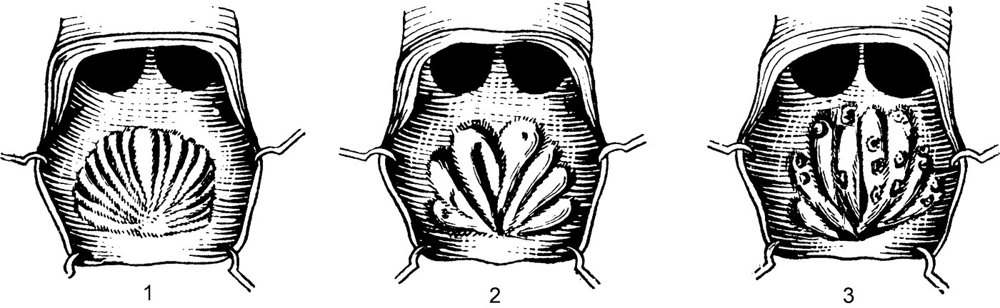
Макроскопически она представляет валики, между которыми имеются борозды. Борозды заканчиваются кзади, образуя своеобразную сумку — bursa pharyngea (Люшка) или Торнвальда (Thornwald), которая, по мнению Люшка, является рудиментом гипофизарного канала. Глоточная миндалина хорошо развита только в детском возрасте. Аденоидные вегетации в детском возрасте мягки и эластичны, со временем они становятся более плотными после того, как часть лимфоидной ткани замещается соединительной тканью, с чего и начинается процесс их инволюции. С 12-летнего возраста она прогрессивно уменьшается, и к 16–20 годам сохраняются лишь небольшие остатки аденоидной ткани, а у взрослых нередко наступает их полная атрофия. При возникновении патологических изменений миндалина увеличивается вследствие гиперплазии лимфаденоидных образований. по: Бабияк и соавт., т. 1, с. 579
Аденоид — часть кольца лимфоидной ткани Вальдейера у входа в верхние дыхательные пути. В раннем детском возрасте это первое место иммунологического контакта для вдыхаемых антигенов. Лимфоидная ткань может быть выявлена на 4–6-й неделе гестации, в слизистой оболочке крыши и задней стенки носоглотки; аденоид отчётливо идентифицируется на третьем месяце гестации. Лимфоидная ткань аденоида может распространяться до ямки Розенмюллера и устья слуховой трубы в виде миндалины Герлаха. Рост продолжается быстро в младенчестве и достигает плато между 2 и 14 годами. Регрессия аденоида у большинства детей происходит быстро после 15 лет. Аденоид имеет наибольшие относительные размеры по отношению к объёму носоглотки в возрасте 7 лет. Клинические симптомы чаще встречаются в более младшей возрастной группе из-за относительно малого объёма носоглотки и повышенной частоты инфекций верхних дыхательных путей.
Функция лимфоидной ткани кольца Вальдейера — выработка антител. Аденоид продуцирует В-клетки, дающие начало плазматическим клеткам IgG и IgA. Контакт с антигенами через рот и нос — важная часть естественного приобретённого иммунитета в раннем детстве. Аденоид, по-видимому, играет важную роль в развитии «иммунологической памяти» у детей младшего возраста; удаление аденоида в раннем возрасте может быть иммунологически нежелательным. Данные об ухудшении иммунного статуса после удаления одного только аденоида неубедительны, так как исследования обычно включали детей, которым одновременно выполнялась тонзиллэктомия. по: Scott-Brown, т. 2, с. 285–286
Хроническим аденоидитом, сопровождающимся гипертрофией глоточной миндалины, болеют дети от 3 до 10 лет (70–75%), остальные заболевания приходятся на старший возраст. Так, А. Г. Лихачев указывал, что гипертрофия глоточной миндалины может встречаться в зрелом, пожилом и даже в старческом возрасте, но на эти возрастные категории приходится не более 1% случаев.
Этиология
Причины гипертрофии глоточной миндалины разнообразны, но чаще в её основе лежит инфекция, внедряющаяся извне (например, с молоком матери, заражённым стафилококком) в паренхиму миндалины и вызывающая её защитную гипертрофию. Часто быстрый рост аденоидов провоцируют детские инфекции (корь, скарлатина, коклюш, дифтерия, краснуха и др.). В 2–3% аденоидные вегетации могут быть инфицированы туберкулёзной палочкой у детей с туберкулёзом различной локализации. Чаще всего гипертрофия глоточной миндалины и хронический аденоидит возникают при лимфатическом диатезе, который характеризуется системными изменениями лимфатических органов, проявляющимися абсолютным и относительным лимфоцитозом в крови, увеличением лимфоузлов и лимфоидных образований носоглотки. Последнее обстоятельство способствует развитию инфекции в миндалине и дальнейшей её гипертрофии.
Патологическая анатомия и патогенез
Морфологически глоточная миндалина представлена бледно-розовым образованием, расположенным на широком основании в области купола носоглотки. При гиперплазии она может достигать кпереди хоан и сошника, кзади — глоточного бугорка, латерально — розенмюллеровых ямок (recessus pharyngeus) и носоглоточных отверстий слуховых труб. Обычно величину гипертрофии глоточной миндалины подразделяют по степеням, определяемым при задней риноскопии: I степень гипертрофии (малый размер) — лимфаденоидная ткань прикрывает верхнюю 1/3 сошника; II степень (средний размер) — лимфаденоидная ткань прикрывает верхние 2/3 сошника (уровень заднего конца средней носовой раковины); III степень — прикрывает полностью хоаны (уровень задних концов нижних носовых раковин). Кроме основного, солитарного лимфоидного образования, располагающегося в куполе носоглотки, большое клиническое значение имеют боковые образования, возникающие в результате гипертрофии фолликулярного аппарата слизистой оболочки. Они нередко заполняют розенмюллеровы ямки и устья слуховых труб (amygdala tubaria Gerlach).
Поверхность глоточной миндалины покрыта такой же слизистой оболочкой, как и остальные лимфаденоидные образования. Крипты и вся остальная поверх ность носоглотки покрыты многослойным мерцательным эпителием. При гипертрофии и воспалении слизистая оболочка, покрывающая миндалину, приобретает ярко розовый или красный цвет, иногда с синюшным оттенком, может быть покрыта слизисто гнойными выделениями, обильно стекающими по задней стен ке глотки. Отрицательная роль аденоидов обычно не ограничивается нарушением носового дыхания, аденоиды нарушают кровообращение в полости носа и в носоглотке. Это сопровождается застойными явлениями не только в носу и в придаточных пазухах (как правило), но и в гипофизарно селлярной области, нарушая функции важной эндокринной железы, тесно связанной с гипоталамусом и другими эндокринными системами организма, — гипофиза. Отсюда — различные соматические и психоэмоциональные нарушения в организме ребенка. по: Бабияк и соавт., т. 1, с. 579–581
Различают 4 степени гипертрофии глоточной миндалины: I степень — аденоидные вегетации прикрывают 1/3 сошника; II степень — аденоиды прикрывают до 1/2 сошника; III степень — аденоиды закрывают 2/3 сошника; IV степень — хоаны закрыты аденоидами полностью. Некоторые авторы выделяют 3 степени гипертрофии аденоидов. по: Пальчун и соавт., с. 250–252
Аденоиды в учебнике Пальчуна, Магомедова, Лучихина
Аденоидные вегетации — патологическая гипертрофия глоточной (носоглоточной) миндалины (vegetatio adenoids), встречается обычно в возрасте от 3 до 14 лет. В период полового созревания, после 14 лет, глоточная миндалина уменьшается; у взрослых гипертрофия глоточной миндалины встречается редко. По данным литературы, аденоиды наблюдаются одинаково часто (от 3 до 45%) как у девочек, так и у мальчиков. Аденоидные вегетации локализуются в области заднего отдела свода носоглотки, могут заполнять весь купол, распространяться по боковым стенкам книзу, на глоточные отверстия слуховых труб. Прикрепляясь широким основанием к своду носоглотки, они имеют неправильную форму, напоминающую петушиный гребень, и разделены глубокими расщелинами на несколько долек; имеют мягкую консистенцию и бледно-розовую окраску. Морфологически аденоиды представлены соединительнотканными перегородками, между которыми располагаются лимфоциты, местами организованные в фолликулы (шаровидные скопления лимфоцитов разной степени зрелости). по: Пальчун, Магомедов, Лучихин, учебник, с. 318
Различают три степени гипертрофии носоглоточной миндалины:
- I степень — аденоиды прикрывают 1/3 сошника.
- II степень — гипертрофированные миндалины закрывают 2/3 сошника.
- III степень — хоаны закрыты полностью.
по: Пальчун, Магомедов, Лучихин, учебник, с. 318–319
Аденоиды в учебнике Заболотного и соавт.
Гипертрофия глоточной миндалины, размещенной в носовой части глотки, носит название «аденоиды», или «аденоидные вегетации», а хроническое ее воспаление — «хронический аденоидит». Чаще всего аденоиды встречаются у детей в возрасте от 3 до 12 лет, но бывают и у детей младшего возраста, а также у взрослых. Частота возникновения аденоидов колеблется от 5 до 30% всех детей в возрасте от 3 до 7 лет. В начале 1970-х годов в Одессе среди детей детских дошкольных учреждений и первых двух классов школ аденоиды были выявлены у 20%, а хронический аденоидит — у 4,9% обследованных. Острые часто повторяющиеся вирусные и бактериальные инфекции слизистой оболочки верхних дыхательных путей приводят к функциональной нагрузке лимфаденоидного аппарата глотки и его гипертрофии. Очевидно, в этом аспекте имеют значение наследственная предрасположенность и конституционные особенности детского организма. Гипертрофия глоточной миндалины часто наблюдается у детей, живущих в плохих материально-бытовых условиях (сырые, плохо проветриваемые помещения), нерационально питающихся, а также в случае аллергизации их организма. Этиология, патогенез и патологическая анатомия хронического аденоидита такие же, как и при хроническом тонзиллите. Следует отметить, что хронический аденоидит развивается у детей раньше, чем хронический тонзиллит. Хронический аденоидит можно выявить даже у детей в возрасте 1 года — 2 лет. по: Заболотный и соавт., с. 348
Гипертрофия лимфоидного глоточного кольца у детей
Гипертрофия лимфоидной ткани глотки (преимущественно носоглоточной и нёбных миндалин) не сопровождается нарушением ее функции. Наблюдается обычно у детей в возрасте 3–10 лет. Гипертрофированная лимфоидная ткань подвергается физиологической инволюции и уменьшается в период полового созревания. Патологическая гипертрофия лимфоидной ткани — гипертрофия аденоидов встречается чаще у детей в возрасте от 2 до 8 лет. Гипертрофия нёбных и глоточной миндалин свойственна детям младшего возраста как проявление общей гиперплазии лимфоидной ткани и защитных реакций организма. Этиология неизвестна. Предрасполагающими факторами могут быть воспалительные заболевания глотки, различные детские инфекционные заболевания, эндокринные нарушения, гиповитаминозы, аномалии конституции, неблагоприятные социальные и бытовые условия и другие воздействия, снижающие реактивность организма.
Гипертрофия лимфоидной ткани в ответ на инфекционное заболевание приводит к учащению воспалительных процессов в глотке. Сохраняя свою функцию, гипертрофированная лимфоидная ткань может, однако, быть причиной патологических изменений в носу, ушах и гортани. Гипертрофии миндалин способствуют острые респираторные заболевания, а латентная инфекция в лакунах обусловливает в дальнейшем фиброзную дегенерацию, а при определенных обстоятельствах — хронический тонзиллит. В результате нарушения носового дыхания вследствие гиперплазии носоглоточной миндалины изменяется газовый состав крови, ослабляется вентиляция легких, возникают гипоксемия и гиперкапния. Нарушение оксигенации органов приводит к их недостаточности. Снижается число эритроцитов и количество гемоглобина в крови, увеличивается число лейкоцитов. Нарушаются функции желудочно-кишечного тракта, снижается функция печени, щитовидной железы и коры надпочечников. Нарушается обмен веществ, замедляется рост ребенка и задерживается половое развитие.
Классификация
Гипертрофия нёбных миндалин I степени — миндалины занимают наружную треть расстояния от нёбной дужки до средней линии зева; II степени — занимают 2/3 этого расстояния; III степени — миндалины соприкасаются друг с другом. Аденоиды (adenoidis), или гиперплазия глоточной миндалины, I степени — миндалины прикрывают верхнюю треть сошника; II степени — прикрывают половину сошника; III степени — прикрывают сошник полностью, доходят до уровня заднего конца нижней носовой раковины.
Гипертрофия нёбных миндалин часто сочетается с гипертрофией всего глоточного лимфоидного кольца, особенно с гипертрофией глоточной миндалины. Дети не болеют ни ангинами, ни острыми респираторными заболеваниями, при осмотре обычно воспалительные изменения в нёбных миндалинах отсутствуют. При выраженной гипертрофии (нёбные миндалины сходятся по средней линии и служат препятствием для дыхания и глотания) отмечаются кашель по ночам и храп; затруднение речи, неправильное произношение некоторых согласных; затруднения во время еды.
Аденоиды у большинства детей формируют аденоидный тип лица (habitus adenoideus): апатичное выражение и бледность лица; полуоткрытый рот; сглаженность носогубных складок; небольшой экзофтальм; отвисание нижней челюсти. Нарушается формирование лицевых костей, неправильно развивается зубочелюстная система, особенно альвеолярный отросток верхней челюсти с его сужением и клинообразным выстоянием кпереди; выражено сужение и высокое стояние нёба (готическое нёбо); верхние резцы неправильно развиты, значительно выступают вперед и расположены беспорядочно. У детей замедляется рост, нарушается формирование речи, дети отстают в физическом и психическом развитии. Голос теряет звучность, появляется гнусавость; снижено обоняние. Увеличенные аденоиды препятствуют нормальному дыханию и глотанию. Выделения из носа при постоянном насморке вызывают раздражение кожи преддверия носа и верхней губы. Сон беспокойный, с открытым ртом, сопровождается храпом. Рассеянность, ослабление памяти и внимания отражаются на успеваемости в школе. Вдыхание через рот неочищенного холодного воздуха приводит к ангине, хроническому тонзиллиту, ларинготрахеобронхиту, пневмонии, реже к нарушению функции сердечно-сосудистой системы. Застойные изменения слизистой оболочки полости носа с нарушением аэрации околоносовых пазух и оттока секрета из них способствуют их гнойному поражению. Закрытие глоточного устья слуховых труб сопровождается понижением слуха, развитием рецидивирующих и хронических заболеваний среднего уха.
Одновременно нарушается общее состояние детей. Отмечаются раздражительность, плаксивость, апатия. Появляются недомогание, бледность кожных покровов, понижение питания, повышенная утомляемость. Ряд симптомов обусловлен не только затруднением носового дыхания. В их основе лежит нервно-рефлекторный механизм. Это психоневрологические и рефлекторные расстройства (неврозы): эпилептиформные припадки; бронхиальная астма; ночное недержание мочи; навязчивый кашель; наклонность к спазмам голосовой щели; поражение зрения. Снижается общая иммунная реактивность организма, а аденоиды также могут быть источником инфекции и аллергизации. Местные и общие нарушения в организме ребенка зависят от длительности и выраженности затруднения носового дыхания. В период полового созревания аденоиды подвергаются обратному развитию, но возникшие осложнения остаются и часто приводят к инвалидизации.
Диагностика аденоидов не представляет затруднений. Их размеры и консистенцию определяют, используя ряд методов. При задней риноскопии аденоиды имеют вид образования бледно-розового цвета с широким основанием, неровной поверхностью, разделенной продольно расположенными щелями, и находятся на своде носоглотки. Применяют рентгенографию, пальцевое исследование носоглотки. При передней риноскопии видны слизисто-гнойное отделяемое в носовых ходах, набухлость или гипертрофия носовых раковин. После анемизации слизистой оболочки во время фонации можно увидеть перемещение аденоидов вверх. Косвенными признаками аденоидов является также гипертрофия нёбных миндалин и лимфоидных элементов на задней стенке глотки. При дифференциальной диагностике гиперплазии нёбных миндалин необходимо иметь в виду увеличение нёбных миндалин при лейкозе, лимфогранулематозе, лимфосаркоме. Аденоидные разращения необходимо дифференцировать с ангиофибромой носоглотки (она отличается плотностью, неровной поверхностью, повышенной кровоточивостью), хоанальным полипом (имеет гладкую поверхность, сероватый цвет, боковое расположение на ножке, исходит из одной хоаны), гипертрофией задних концов нижних носовых раковин, которые закрывают хоаны со стороны полости носа, а свод носоглотки остается свободным, мозговой грыжей (имеет гладкую поверхность, серовато-голубоватый цвет, исходит из верхней стенки свода носоглотки). по: Богомильский, Чистякова, с. 264–266
Аденоиды в учебнике Пальчуна для колледжей
Аденоидные разращения (adenoides) встречаются обычно в возрасте от 3 до 15 лет, но бывают и у детей младше, а также у взрослых. Аденоиды наблюдают одинаково часто у мальчиков и девочек, примерно у 3,5–8%. Аденоидные разращения локализуются в области заднего отдела свода носоглотки, но могут заполнять весь ее купол и распространяться по боковым стенкам книзу к глоточным устьям слуховых труб. Они обычно прикрепляются широким основанием, имеют неправильную округлую форму и разделены глубокой расщелиной по средней сагиттальной линии; каждая половинка делится менее глубокой щелью на две или три дольки. Обычно аденоиды мягкой консистенции, имеют бледно-розовую окраску; у взрослых они более плотные, в редких случаях могут быть склерозированными, что объясняется частым их воспалением.
Основные признаки аденоидов — нарушения носового дыхания, серозные выделения из носа, нарушение функции слуховых труб, частые воспаления как в носоглотке, так и в полости носа. Нарушение носового дыхания зависит от степени гипертрофии носоглоточной миндалины и обусловленных аденоидами застойных явлений в слизистой оболочке носа, особенно задних концов носовых раковин. Различают степени аденоидных разращений: при I степени аденоиды прикрывают до 1/3 сошника, при II — до 1/2, при III степени 2/3 сошника закрыты гипертрофированной миндалиной и при IV — хоаны закрыты полностью или почти полностью. Аденоидные разращения I степени не нарушают заметным образом носового дыхания во время бодрствования ребенка, однако во сне объем их несколько увеличивается за счет большего венозного кровенаполнения, что затрудняет носовое дыхание. Если в анамнезе заболевания выяснено, что во время сна ребенок дышит открытым ртом, это указывает на возможные аденоиды.
Нередко аденоиды осложняются аденоидитом. Регионарные шейные, затылочные и подчелюстные лимфатические узлы при аденоидах, и особенно при аденоидите, могут быть увеличены. Дети, страдающие аденоидами, обычно плохо спят, часто храпят, их может беспокоить удушье в связи с западением языка; плохой сон нередко сопровождается тяжелыми сновидениями. При длительном течении заболевания у детей возникают нарушения в развитии лицевого скелета: постоянно отвисшая нижняя челюсть становится узкой и удлиненной, неправильно развивается твердое нёбо — оно формируется высоким и узким; в связи с неправильным расположением зубов нарушается прикус. Эти изменения придают лицу характерный «аденоидный» вид. Значительным может быть влияние аденоидов на некоторые механизмы дыхательной функции и мозгового кровообращения. У детей, страдающих гипертрофией носоглоточной миндалины, с течением времени нарушается формирование грудной клетки («куриная грудь»), развивается малокровие, могут увеличиться размеры слепого пятна на глазном дне. Дети, страдающие аденоидами, обычно вялые, они рассеянны, плохо успевают в школе, их часто беспокоит головная боль. Наряду с отмеченной симптоматикой заболевания данные задней и передней риноскопии, пальцевое исследование носоглотки, а в необходимых случаях простая и контрастная рентгенография позволяют установить точный диагноз. Лечение, как правило, хирургическое; консервативные методы применяют лишь при небольшом увеличении миндалины или противопоказаниях к операции. по: Пальчун, учебник для колледжей, с. 163–164
Аденоиды в национальном руководстве
Синонимы: гипертрофия глоточной миндалины, аденоидные вегетации. Глоточная миндалина как часть лимфоидного глоточного кольца Вальдейера — Пирогова, обладая всеми свойствами иммунокомпетентных органов, выполняет важную защитную и иммунологическую функцию при адаптации организма к факторам внешней среды. При определённых обстоятельствах возникает лимфоцитарно-лимфобластная гиперплазия глоточной миндалины, определяемая как аденоидные вегетации. Наблюдают чаще у детей в возрасте 2–10 лет. Коды по МКБ-10: J35.1 Гипертрофия миндалин (увеличение миндалин); J35.2 Гипертрофия аденоидов; J35.3 Гипертрофия миндалин с увеличением аденоидов; J35.8 Другие хронические болезни миндалин и аденоидов; J35.9 Хроническая болезнь миндалин и аденоидов неуточнённая.
Аденоиды диагностируют более чем у 90% детей раннего и дошкольного возраста. При отсутствии соответствующего лечения аденоидита как ответной реакции на любой воспалительный процесс верхних дыхательных путей они сравнительно быстро увеличиваются в размере, приводя к резкому нарушению носового дыхания и развитию сопутствующих заболеваний ЛОР-органов, а также других органов и систем организма. Профилактика: своевременное проведение профилактических прививок от наиболее распространённых детских инфекционных заболеваний, закаливание организма, ранняя диагностика и рациональное лечение воспалительных заболеваний верхних дыхательных путей и аденоидита, повышение иммунологической реактивности детского организма. Скрининг: пальцевое исследование носоглотки в любых условиях наряду с выяснением анамнестических данных. по: Нац. руководство, 2016, с. 823–824
Различают три степени гипертрофии глоточной миндалины:
- I степень — аденоидная ткань занимает верхнюю треть носоглотки и прикрывает верхнюю треть сошника.
- II степень — аденоидная ткань занимает половину носоглотки и прикрывает половину сошника.
- III степень — аденоидная ткань занимает всю носоглотку, прикрывает сошник полностью, доходит до уровня заднего конца нижней носовой раковины; значительно реже увеличенные аденоиды выступают в просвет ротоглотки.
У детей раннего возраста гипертрофию аденоидной ткани до определённого возраста можно отнести к физиологическому явлению, отражающему формирование защитной системы на пути проникновения со струёй воздуха микроорганизмов в верхние дыхательные пути. Будучи частью единой барьерной структуры, аденоидная ткань сначала реагирует на инфекционное воздействие мобилизацией компенсаторных возможностей. Со временем нарушается процесс физиологической регенерации лимфоидной ткани, и постепенно начинает преобладать число атрофирующихся реактивных, а затем и регенерирующих фолликулов. Предрасполагающими факторами для гипертрофии аденоидной ткани могут быть возрастная несовершенность иммунологических процессов, воспалительные заболевания глотки, различные детские инфекционные заболевания и повышенная аллергизация детского организма в связи с частыми острыми респираторно-вирусными заболеваниями, эндокринные нарушения, гиповитаминозы, аномалии конституции, грибковая инвазия, неблагоприятные социальные и бытовые условия, радиационное и другие виды воздействия, снижающие реактивность организма. Увеличение аденоидов — одно из проявлений адаптации организма к изменившимся условиям в ответ на значительное функциональное напряжение в результате частых воспалительных процессов. Одной из причин возникновения гипертрофии глоточной миндалины считают нарушения в системе цитокинов, служащих регуляторами иммунитета, в частности воспалительного процесса, наряду с гипофункцией кортикального слоя надпочечников. Лимфоцитарно-лимфобластная гиперплазия — следствие повторного усиления функциональной активности глоточной миндалины под влиянием часто повторяющихся местных воспалительных изменений при различных инфекционных заболеваниях, особенно протекающих на фоне аллергии, и при несовершенстве иммунологических процессов у детей младшего возраста. по: Нац. руководство, 2016, с. 824–825
Точка зрения зарубежных авторов
Аденоид может быть вовлечён в заболевания верхних дыхательных путей вследствие частичной или полной обструкции хоан или в результате инфекции. Патологические проявления включают ринит, риносинусит, средний отит и средний отит с выпотом. Польза аденоидэктомии при среднем отите с выпотом традиционно объяснялась устранением анатомической обструкции слуховой трубы; хотя это может быть одним из факторов, очевидно, что размер аденоида и физическая обструкция сами по себе не объясняют эффекта удаления при малом аденоиде. Вероятно, рецидивирующее острое или хроническое воспаление аденоида и повышенная бактериальная нагрузка, особенно Haemophilus influenzae, приводят к плоскоклеточной метаплазии, фиброзу и снижению мукоцилиарного клиренса; эти изменения повышают адгезию бактерий и способствуют развитию «биоплёночной» инфекции, ведущей в конечном счёте к выпоту в среднем ухе. по: Scott-Brown, т. 2, с. 286–287
Клиническая картина аденоидов и их осложнения
Симптомы и клиническое течение
Наличие у ребёнка аденоидов устанавливается при первом взгляде на него: открытый рот, отвисшая нижняя челюсть, сглаженность носогубных складок, бледность кожи лица, синюшность под глазами, вялость, рассеянный вид и безразличное выражение лица, — все эти признаки определили понятие «аденоидного лица» (facies adenoidicus, habitus adenoidicus — аденоидная внешность). При аденоидах самым существенным симптомом являются признаки нарушения носового дыхания. Дети дышат в основном через рот, особенно в ночное время. Сон их беспокоен, поверхностен, во сне они часто плачут или вскрикивают, иногда возникает стридорозное дыхание из-за западения языка. Нередко отмечается ночное недержание мочи. Утром дети вялые, сонливые, часто плачут, плохо едят. в них гиперплазии межуточной ткани и в конце концов приводят к хроническим воспалительным процессам риносинусной системы. К хроническому насморку присоединяется ряд других расстройств как местного, так и общего характера.
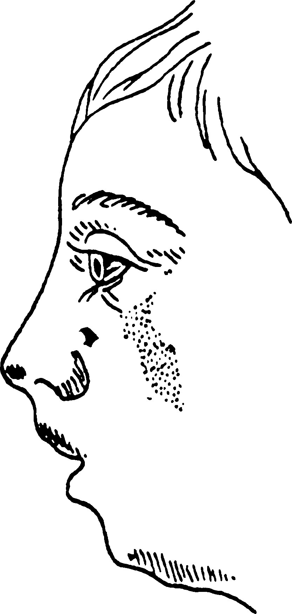
При аденоидах, заполняющих весь свод носоглотки и препятствующих свободному носовому дыханию, т. е. исключающих резонаторную и фонаторную функции полости носа, отмечается нарушение фонации. Произношение согласных «м» и «н» затруднено, они звучат как «б» и «д». Такое произношение «носовых» гласных получило название закрытой гнусавости (rhinolalia clausa), в отличие от открытой гнусавости (rhinolalia aperta), возникающей при параличе мягкого нёба или его анатомическом дефиците. Воздействие аденоидов на слуховые трубы (обтурация носоглоточного отверстия, гиперплазия миндалины Герлаха, инфицирование слизистой оболочки слуховых труб) в большинстве случаев приводит к периодической или постоянной тугоухости, что ведёт к отставанию в развитии ребёнка, рассеянности и невнимательности. Дети раннего возраста из-за тугоухости тубарного генеза с трудом овладевают речью.
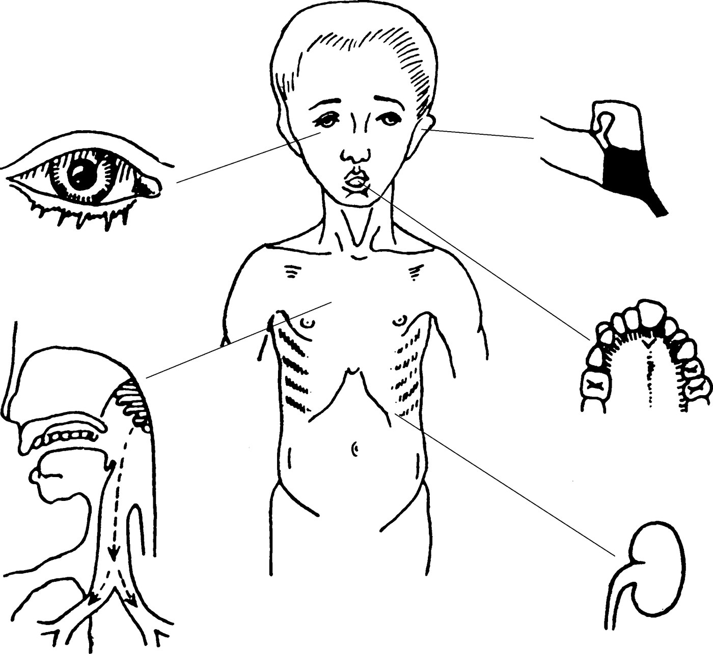
Постоянные густые вязкие выделения из носа вызывают раздражение и мацерацию кожи верхней губы, ее отечность и экзематозное поражение кожи преддверия носа.
Постоянное дыхание через рот вызывает различные аномалии развития лицевого скелета. Особенно заметно изменяется форма верхней челюсти. Наблюдается её сужение и удлинение кпереди, что придаёт ей клинообразную форму. Альвеолярный отросток и зубы выдаются вперёд и за дугу нижней челюсти, из-за чего верхние зубы накрывают вестибулярную поверхность нижних зубов (так называемая верхняя прогнатия), что приводит к нарушению прикуса. Твёрдое нёбо, продолжая развиваться, вдаётся в полость носа в виде глубокого вдавления, напоминающего свод готического собора («готическое нёбо»). Одновременно отстаёт в развитии нижняя челюсть (микрогения), что ещё больше подчёркивает деформацию лицевого скелета и увеличивает нарушение прикуса.
При своевременно не санированных аденоидах неизбежны осложнения, они проявляются многочисленными нарушениями соматического и психического развития ребёнка, а также нарушениями органов чувств и внутренних органов. Клиническими наблюдениями установлено отсутствие коррелятивной связи между величиной аденоидов и частотой, разнообразием и выраженностью осложнений. Часто небольшие аденоиды могут спровоцировать существенные осложнения со стороны различных органов и систем. К частым осложнениям относятся хронический, часто обостряющийся аденоидит, острое воспаление нёбных миндалин, ларинготрахеит, пневмония, катар слуховой трубы, тубоотит, острый гнойный средний отит. Типичны глазные осложнения в виде блефарита, конъюнктивита, язвенного кератита. Аденоидные разращения приводят к нарушению развития скелета: узкая «куриная» грудь, кифоз и сколиоз позвоночника, деформация нижних конечностей. ют отхаркивать мокроту, попадающую в гипофаринкс из носоглотки, поэтому они ее заглатывают. Нередко это ведет к нарушению функций ЖКТ.
Другую группу осложнений составляют рефлекторные расстройства. К рефлекторным нарушениям могут быть отнесены ночное недержание мочи, головные боли, астматические приступы, ларингоспазм, хорееподобные конвульсии мышц лица, напоминающие произвольные детские гримасы, и др. Нервно-психические нарушения у детей, такие как снижение памяти, замедление интеллектуального развития, постоянная заторможенность и сонливость, нарушения фиксации внимания, обусловлены патологическим влиянием аденоидных вегетаций на гипофиз, имеющий тесные связи с глоточной миндалиной, не только опосредованно через нервные образования, но и прямой связью благодаря наличию у детей краниофарингеального канала, берущего начало в сумке Люшки и ведущего непосредственно к гипофизу. Гипофункция передней доли приводит к отставанию ребёнка в росте и половом созревании. Удаление аденоидов восполняет этот недостаток и приводит к ликвидации большинства рефлекторных нарушений, связанных с ними. по: Бабияк и соавт., т. 1, с. 581–583, 585
Вследствие длительного нарушения носового дыхания уменьшается оксигенация крови, ребёнок становится вялым, рассеянным, плохо успевает в школе, ухудшается память, часто беспокоит головная боль, могут возникнуть нарушения в развитии лицевого скелета, «аденоидное лицо». В случаях когда аденоидные вегетации распространяются на область устья слуховой трубы, наступает нарушение её функции и в последующем воспаление среднего уха. При гипертрофии аденоидов III и IV степени консервативные мероприятия неэффективны. по: Пальчун и соавт., с. 253
Клиническая картина обычно хорошо выражена и зависит от степени разрастания аденоидов. Основными признаками аденоидов являются нарушение носового дыхания, серозные выделения из носа, нарушение функции слуховых труб, что приводит к частым отитам. Дети, страдающие аденоидами, обычно плохо спят, часто храпят, рот полуоткрыт, фонация нарушена и сопровождается носовым оттенком. При длительном течении заболевания у детей возникают нарушения в развитии лицевого скелета: полуоткрытый рот, сглаженность носогубных складок, постоянно отвисшая нижняя челюсть становится узкой и удлиненной, неправильно развивается твердое нёбо — оно формируется высоким и узким, нарушается прикус. Эти изменения придают лицу характерный аденоидный вид (habitus adenoideus). Значительным может быть влияние аденоидов на дыхательную функцию и мозговое кровообращение. В силу рефлекторных влияний дыхание через рот имеет несколько меньшую глубину, чем через нос. У ребенка эта хроническая недостача вентиляции легко не компенсируется. Уменьшенная оксигенация крови может проявиться постоянным чувством вялости, понижением трудоспособности, дети отстают в учебе, их часто беспокоит головная боль. У детей, страдающих гипертрофией глоточной миндалины, нарушается формирование грудной клетки («куриная грудь»), развивается малокровие. Постоянное ротовое дыхание приводит к высыханию слизистой оболочки полости рта, развитию атрофического фарингита, ангин, неблагополучно отражается на состоянии нижних дыхательных путей. Нарушение аэрации полости носа и околоносовых пазух приводит к воспалительным заболеваниям этих органов и слуховой трубы с последующим инфицированием среднего уха и понижением слуха. по: Пальчун, Магомедов, Лучихин, учебник, с. 319–320
Клиническая картина аденоидов и хронического аденоидита в учебнике Заболотного и соавт.
Дети, болеющие аденоидитом, сами или со слов родителей жалуются на нарушение носового дыхания (постоянное или только ночное), гнусавость, частое ухудшение слуха в связи с хроническим катаром среднего уха. Во время сна дети беспокойны, часто просыпаются, вскрикивают, храпят. Ночной сон не приносит отдыха, дети просыпаются утомленными, бледными, жалуются на головную боль. У некоторых из них наблюдается ночное недержание мочи. Такие дети плохо учатся в школе, с трудом усваивают учебный материал, у них ухудшается память. Во время объективного обследования внимание часто привлекает лицо ребенка аденоидного вида («аденоидизм» — habitus adenoides): апатическое выражение лица со сглаженностью носогубных складок, с широко раскрытыми выпученными и малоподвижными глазами, полуоткрытым ртом, укороченной верхней губой. При осмотре носовой полости отмечают сизый цвет слизистой оболочки, гипертрофию задних отделов нижних носовых раковин. У детей с аденоидами наблюдается нарушение роста лицевого скелета: верхняя челюсть словно сдавлена, твердое нёбо имеет готическую форму. Нарушается прикус, что приводит к неправильному прорезыванию зубов. Возможны нарушения и в развитии скелета грудной клетки: так называемая грудь сапожника, или куриная грудь.
Практически невозможно выявить больного с аденоидами, у которого были бы абсолютно все вышеперечисленные симптомы. Однако для правильной диагностики обязательно следует провести заднюю риноскопию, при которой обнаруживают аденоидные разрастания в носовой части глотки. Степень гипертрофии глоточной миндалины определяют следующим образом: если аденоиды достигают верхнего уровня сошника — это I степень, если опускаются до уровня средней носовой раковины — II степень, если закрывают хоаны — III степень. У маленьких детей не всегда удается провести заднюю риноскопию. В таком случае проводят пальцевое исследование носовой части глотки. При этом голова ребенка прижимается левой рукой к боковой поверхности грудной клетки врача. В открытый рот врач вводит указательный палец левой руки между зубами сквозь щеку (это исключает возможность укусить палец врача), а указательный палец правой руки проводит за мягкое нёбо в носовую часть глотки. Если имеются аденоиды, то они определяются как мягкое образование, заполняющее носовую часть глотки.
Дети часто болеют острым аденоидитом, который педиатры редко диагностируют, ставя диагноз острого ринофарингита. Дети, болеющие хроническим аденоидитом, между обострениями жалуются на общую слабость, быструю утомляемость, головную боль, у них возможна субфебрильная температура тела. Как правило, у таких детей наблюдается постоянный насморк, ночью их иногда беспокоит кашель. Нередко в конце ночи или утром наблюдается рвота слизью, которую ребенок глотает. Во время объективного обследования можно выявить мацерацию и гиперемию кожи верхней губы из-за постоянного выделения слизи из носа. Слизистая оболочка носа сизого цвета, отекшая, покрыта слизисто-гнойными выделениями белого цвета, которые накапливаются в нижнем носовом ходу. Во время фарингоскопии видно, как по задней стенке глотки из носовой ее части стекает полоска белой слизи. Во время задней риноскопии выявляют аденоиды круглой формы, бороздки сглажены, слизистая оболочка гиперемированная, отекшая, покрытая белой слизью. Под пальцем при пальцевом исследовании ощущаются плотные, круглой формы аденоиды, так как вследствие хронического процесса в лимфаденоидной ткани глоточной миндалины образовалось много соединительных элементов. по: Заболотный и соавт., с. 348–350
Клиническая картина аденоидов в национальном руководстве
Основные симптомы — нарушение носового дыхания и упорный насморк. Аденоиды у большинства детей формируют характерный тип лица (habitus adenoideus): апатичное выражение и бледность кожи, полуоткрытый рот, сглаженность носогубных складок, небольшой экзофтальм, отвисание нижней челюсти. Нарушается формирование лицевых костей: неправильно развивается зубочелюстная система, особенно альвеолярный отросток верхней челюсти с его сужением и клинообразным выстоянием кпереди; выражено сужение и высокое стояние нёба (готическое нёбо — гипсистафилия); неправильно развиты верхние резцы, они значительно выступают вперёд и беспорядочно расположены; рано возникает кариес зубов; высоко стоящее твёрдое нёбо приводит к искривлению носовой перегородки и узости полости носа.
У детей замедляется рост, формирование речи, они отстают в физическом и психическом развитии. Голос теряет звучность, появляется гнусавость вследствие закупорки носа со стороны хоан («закрытая гнусавость»), снижено обоняние. Увеличенные аденоиды препятствуют нормальному дыханию и глотанию. Нарушены функции носа, развиваются синуситы. Выделения из носа при постоянном насморке вызывают раздражение кожи преддверия носа и носогубной области, а частое проглатывание выделений — нарушения со стороны желудочно-кишечного тракта. Длительное ротовое поверхностное и частое дыхание служит причиной неправильного развития грудной клетки («куриная грудь»), анемии. Сон беспокойный, с открытым ртом, сопровождается храпом. Рассеянность, ослабление памяти и внимания отражаются на успеваемости в школе. Постоянное вдыхание через рот неочищенного холодного воздуха приводит к развитию ангины, хронического тонзиллита, ларинготрахеобронхита, пневмонии, реже к нарушению функции сердечно-сосудистой системы. Застойные изменения слизистой оболочки полости носа с нарушением аэрации околоносовых пазух и оттока секрета из них способствуют их гнойному поражению. Закрытие глоточного устья слуховых труб сопровождается понижением слуха по кондуктивному типу, развитием рецидивирующих и хронических заболеваний среднего уха.
Одновременно нарушается общее состояние детей. Отмечают раздражительность, плаксивость, апатию. Возникают недомогание, бледность кожных покровов, понижение питания, повышенная утомляемость. Ряд симптомов обусловлен не только нарушением дыхания. В их основе лежит нервно-рефлекторный механизм. Это психоневрологические и рефлекторные расстройства (неврозы), эпилептиформные припадки, бронхиальная астма, ночное недержание мочи (энурез), навязчивый приступообразный кашель, наклонность к спазмам голосовых складок, поражение зрения, хорееподобные движения мышц лица. Снижается общая иммунная реактивность, а аденоиды также могут стать источником инфекции и аллергизации. Местные и общие нарушения в организме ребёнка зависят от длительности и степени выраженности затруднения носового дыхания. Гипертрофия аденоидов — обратимый процесс. В период полового созревания они подвергаются обратному развитию, но возникшие осложнения остаются и часто приводят к инвалидизации. по: Нац. руководство, 2016, с. 825–826
Точка зрения зарубежных авторов
Нарушения дыхания во сне
Частота тяжёлых нарушений сна у детей вследствие обструкции верхних дыхательных путей оценивается примерно в 1% с пиком в возрасте 3–6 лет. Обструкция дыхательных путей при аденоидной гипертрофии может вызывать снижение артериального PaO2 и повышение PaCO2, нормализующиеся после аденоидэктомии. Респираторное улучшение после аденотонзиллэктомии сопровождается значительным ростом сывороточного инсулиноподобного фактора роста-1, что отчасти объясняет часто наблюдаемый скачок роста после операции. Накапливаются данные, что привычный храп, не достигающий обструктивного апноэ, может приводить к нейроповеденческой заболеваемости, плохой успеваемости и гиперактивному поведению.
У детей аденоид участвует в риносинусите, являясь резервуаром патогенных бактерий. Гиперплазия аденоида может снижать обонятельную чувствительность, в частности ретроназальное обоняние и вкус, что улучшается после аденоидэктомии. Неожиданная неоплазия аденоида (и миндалин) в детстве встречается редко; атипичная лимфаденопатия со стойким и асимметричным увеличением миндалин и аденоида в отсутствие инфекции вызывает подозрение и должна побуждать к ранней визуализации и биопсии. по: Scott-Brown, т. 2, с. 286
Острый аденоидит и хронический аденоидит
Острый простой аденоидит, или ретроназальная ангина, — это воспаление аденоидных вегетаций, встречающееся чаще всего в раннем детском возрасте и в первые годы жизни. Проявления его в раннем детском возрасте (до 1 года жизни) и в последующем возрасте различны. Различают также острый или подострый рецидивирующий и пролонгированный аденоидит. Острый простой аденоидит в раннем детском возрасте начинается внезапно с подъёма температуры тела до 40–41 °С, часто сопровождается судорожным синдромом, спазмом гортани, частым дыханием, тахикардией и аритмией. Заболевший младенец отказывается от груди из-за невозможности сосания (отсутствие носового дыхания), что быстро приводит к потере массы тела ребёнка. При фарингоскопии определяется истечение гноя по задней стенке глотки, который ребёнок заглатывает. Подчелюстные лимфатические узлы увеличены и болезненны. Гипертермия может продолжаться от 3 до 5 дней. К осложнениям острого простого аденоидита относятся острое воспаление верхних дыхательных путей (ларинготрахеит), бронхопневмония, острый отит, парафарингеальный абсцесс и флегмона, что делает прогноз весьма осторожным.
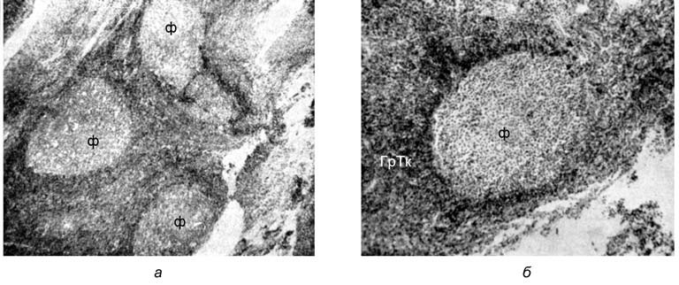
В детском возрасте заболевание также имеет острое начало и часто сопровождается стридорозным ларингитом, оталгией, менингизмом, явлениями гипоксии. Отсутствующее носовое дыхание компенсировано дыханием через рот. Отмечается закрытая гнусавость. При передней и задней риноскопии обнаруживают резко увеличенные, гиперемированные или покрытые псевдоплёнкой аденоидные разрастания, закрывающие хоаны (при задней риноскопии) и пролабирующие в задневерхние отделы полости носа (при передней риноскопии). По задней стенке глотки стекают гнойные выделения, которые также определяются и в полости носа. Обычно наблюдается ассоциированный нёбный амигдалит.
Рецидивирующие аденоидиты у детей, возникающие обычно в холодное время года, отличаются значительной частотой. Эта форма острого простого аденоидита, начиная с раннего детского возраста, приводит с каждым новым рецидивом ко всё большей гипертрофии аденоидной ткани, что сопровождается дефектами развития лицевого черепа, деформациями прикуса и другими нежелательными последствиями в развитии ребёнка. Осложнения при этой форме многочисленны (отит, синусит, аденофлегмона, заболевания нижних дыхательных путей и др.). Острый пролонгированный аденоидит отличается от острого простого аденоидита более длительным развитием и клиническим течением (несколько недель). Отмечается несоответствие между повышенной температурой тела и относительно удовлетворительным состоянием ребёнка. Носовое дыхание может быть удовлетворительным, кормление ребёнка грудью не вызывает особых затруднений.
Диагноз устанавливают на основании клинической картины и воспалительных изменений носоглоточной миндалины. Эту форму аденоидита следует дифференцировать с дифтерией путём бактериологического исследования мазка из носоглотки и нёбных миндалин. Лечение острого простого аденоидита у младенцев должно быть направлено в первую очередь на восстановление носового дыхания хотя бы на период кормления. В остальном лечение проводят как при фолликулярной ангине с назначением антибиотиков и под наблюдением педиатра. Если ребёнок хотя бы однократно перенёс острый аденоидит, целесообразно выполнить операцию аденотомии, поскольку в подавляющем большинстве случаев острый простой аденоидит неминуемо переходит в хронический аденоидит с проявлениями синдрома фокальной инфекции.
Гиперплазия глоточной миндалины, как правило, сопровождается хроническим воспалением её паренхимы, скопление патогенных микробов в её бороздках значительно усугубляет воспалительный процесс, превращая миндалину в пропитанную гноем губку. Это вялотекущее воспаление получило название хронического аденоидита; оно значительно усложняет течение аденоидизма у детей и чаще всего приводит к различным гнойным осложнениям. Воспалительный процесс из носоглотки легко распространяется на глотку, гортань и бронхи, особенно при острых катарах и частых длительных воспалительных заболеваниях ВДП. Затекание слизисто-гнойного отделяемого в гортань вызывает упорный кашель, особенно по ночам. Обострения хронического аденоидита сопровождаются повышением температуры тела, скребущей локальной болью в носоглотке, увеличением слизисто-гнойного отделяемого, иррадиацией боли в основание черепа, затылок, глазницы.
Гипертрофированная глоточная миндалина резко увеличивается в размерах, полностью обтурируя хоаны. Общее состояние ребенка в таких случаях значительно ухудшается. Ребенок становится вялым, раздражительным, нередко плачет из за болей в носоглотке, утрачивает аппетит, часто во время приема пищи у него возникает рвота.
Другим осложнением, связанным с гнездящейся в аденоидах инфекцией, является острый аденоидит, представляющий собой ретроназальную, или носоглоточную, ангину. В части случаев осложнение протекает по типу катарального воспаления, реже — по типу фолликулярной ангины. Заболевание возникает, как правило, у детей раннего возраста и начинается внезапно с высокой температуры (39–40 °С). Одновременно возникает полная обструкция носового дыхания, боль в ушах и приступообразный кашель по ночам. Острый аденоидит, если он не сопровождался осложнениями, при интенсивном лечении заканчивается, как и обыкновенная ангина, на 3–5-й день выздоровлением.
Симптомы обычно такие же, как и при обострении хронического аденоидита, разница заключается лишь в остроте возникшего воспаления и в более тяжелом общем состоянии, регионарные лимфоузлы увеличиваются и становятся болезненными. Выделения из носоглотки становятся обильными и гнойными. Ребенок буквально захлебывается в них и, не умея отхаркивать и сплевывать, заглатывает их, что нередко вызывает острое воспаление слизистой оболочки желудка и дис пепсические расстройства. Наличие в детском возрасте более короткой и широкой слуховой трубы способствует попаданию инфекции в среднее ухо, особенно когда родители пытаются научить ребенка сморкаться. Повышение давления в носоглотке при этих попытках облегчает попадание гнойного отделяемого в сред нее ухо и возникновение острого гнойного среднего отита. по: Бабияк и соавт., т. 1, с. 477–478, 583–584
Аденоидит в учебнике Пальчуна, Магомедова, Лучихина
Аденоидит (ретроназальная ангина) — острое воспаление глоточной миндалины, встречается в основном у детей, что связано с разрастанием в этом возрасте аденоидной ткани. В относительно редких случаях ангина глоточной миндалины появляется и у взрослых, когда эта миндалина не претерпела возрастной инволюции. Воспалительный процесс обычно распространяется с миндалины на слизистую оболочку верхнего и среднего отделов глотки. Причиной возникновения острого аденоидита является активизация сапрофитной флоры носоглотки под влиянием переохлаждения, вирусной инфекции, а также других общих инфекционных заболеваний.
Острый аденоидит у детей раннего возраста начинается с повышения температуры тела до 40 °С и нередко с появления общих симптомов интоксикации — рвоты, жидкого стула. Носовое дыхание затруднено, появляются слизисто-гнойные выделения из носа, увеличиваются регионарные лимфатические узлы, голос с носовым оттенком. Появление кашля указывает на раздражение гортани и трахеи слизисто-гнойным отделяемым из носоглотки, что может стать причиной трахеобронхита. Нередко к острому аденоидиту присоединяется ангина тубарных миндалин, боковых валиков, лимфоидных гранул (фолликулов) глотки. В ряде случаев могут присоединиться евстахиит, катаральный отит, ретрофарингеальный абсцесс. При объективном исследовании на резко гиперемированной задней стенке ротоглотки видна характерная для этого заболевания полоска слизисто-гнойного секрета, стекающего из носоглотки. Нередко одновременно наблюдается гиперемия задних нёбных дужек. При передней риноскопии после анемизации слизистой оболочки носа можно увидеть гиперемированную и отечную аденоидную ткань, покрытую слизисто-гнойной пленкой. При задней риноскопии глоточная миндалина резко набухшая, гиперемирована, на ее поверхности могут быть точечные или сливные гнойные налеты. Общий вид соответствует картине при катаральной, фолликулярной или лакунарной ангине.
Необходима общая и местная противовоспалительная терапия. Назначаются антибиотики (ампициллин, амоксициллин + клавулановая кислота, эритромицин и др.), антигистаминные средства (астемизол, лоратадин, эбастин, цетиризин и др.), анальгетики, препараты, содержащие парацетамол. При местной терапии необходимо восстановить носовое дыхание, для чего назначают сосудосуживающие и антисептические средства в виде капель в нос на 6–7 дней (ксилометазолин, нафазолин, 2% раствор серебра протеината, экстракт листьев эвкалипта и др.), секретолитики в виде аэрозолей (ацетилцистеин + туаминогептан и др.). При наличии аденоидов II–III степени через 3–4 нед после обострения рекомендована операция — удаление аденоидов (аденотомия). по: Пальчун, Магомедов, Лучихин, учебник, с. 279–280
Аденоидит в национальном руководстве
Синонимы: ретроназальная ангина (angina retronasalis), хроническое воспаление глоточной миндалины. Аденоидит — инфекционно-аллергический процесс, развивающийся вследствие нарушения физиологического равновесия между макро- и микроорганизмом с последующим извращением местных иммунологических процессов в области глоточной миндалины. Преимущественно наблюдают в раннем детском возрасте; при сохранении гипертрофии глоточной миндалины у взрослых также может развиться острая ретроназальная ангина. Профилактика: удаление аденоидов при часто рецидивирующих аденоидитах, проведение оздоровительных мероприятий, своевременная санация других очагов инфекции. Скрининг: пальцевое исследование носоглотки у детей (доступно на любом этапе оказания медицинской помощи). по: Нац. руководство, 2016, с. 828–829
Различают острый и хронический аденоидит. Острый аденоидит определяют как ретроназальную ангину. Хронический аденоидит имеет различные клинико-морфологические варианты в зависимости от преобладающего у больного типа воспалительной реакции, степени аллергизации и иммунологической реактивности. Известно несколько классификаций хронического аденоидита:
- Катаральный, экссудативно-серозный и слизисто-гнойный.
- По характеру воспалительной реакции аденоидной ткани выделяют лимфоцитарно-эозинофильный со слабой экссудацией, лимфоплазмоцитарный и лимфоретикулярный с серозным экссудатом и нейтрофильно-макрофагальный вариант воспаления с гнойным экссудатом.
- С учётом степени аллергизации и состояния иммунитета определяют следующие формы хронического аденоидита: аденоидит с выраженным аллергическим компонентом, аденоидит с преобладанием активности реакций гуморального звена иммунитета (гипериммунный компонент), гипоиммунный аденоидит при недостаточности функциональной активности лимфоцитов и гнойно-экссудативный аденоидит при повышенной активности нейтрофилов и макрофагов, снижении фагоцитоза, повышенной киллерной активности Т-лимфоцитов.
- По степени выраженности местных признаков воспаления и поражения соседних анатомических образований выделяют компенсированный, субкомпенсированный и декомпенсированный аденоидит.
- Поверхностный и лакунарный аденоидит.
Острый аденоидит развивается обычно на фоне острых респираторных заболеваний, при воспалении лимфаденоидного аппарата других отделов глотки. Среди основных этиологических факторов хронического аденоидита выделяют текущий воспалительный процесс, иммунный ответ в виде гиперплазии лимфоидной ткани, иммунореактивное состояние, связанное с повышенной бактериальной обсеменённостью, и перестройку организма в связи с перенесёнными воспалительными и иммунными реакциями. Причиной возникновения острого аденоидита считают активизацию условно-патогенной микрофлоры носоглотки со слабо выраженными антигенными свойствами. Под влиянием часто повторяющихся местных воспалительных изменений на фоне несостоятельности и несовершенства общих иммунологических процессов у детей раннего возраста аденоиды постепенно сами становятся очагом патогенной инфекции, в своих складках и бухтах могут содержать обильную бактериальную микрофлору и способствуют развитию повторяющихся острых и хронических воспалений носоглотки, которые, в свою очередь, вызывают рецидивирующее течение хронического отита, трахеобронхита, синусита и других заболеваний. Хронический аденоидит развивается, как правило, на аллергическом фоне при ослаблении фагоцитоза, состоянии дисфункции иммунных процессов. В связи с частыми инфекционными заболеваниями лимфоидная ткань испытывает значительное функциональное напряжение, постепенно нарушается динамическое равновесие процессов альтерации и регенерации ткани аденоидов, возрастает число атрофирующихся и реактивных фолликулов как проявление напряжения адаптационных механизмов в условиях дисбаланса иммунных клеток.
Острый аденоидит наблюдают преимущественно у детей в период развития глоточной миндалины как осложнение воспалительного процесса в полости носа, околоносовых пазухах и при различных инфекциях. При сохранении гипертрофированной лимфаденоидной ткани глоточной миндалины у взрослых также может развиться острый аденоидит. Характерно острое начало заболевания с гипертермией, интоксикацией, навязчивым кашлем. Больные жалуются на головную боль и боль в глубине носа, за мягким нёбом при глотании, иррадиирующую в задние отделы полости носа и в уши, скопление вязкой мокроты в носоглотке, иногда на тупую боль в затылке, ощущение саднения, щекотания в горле, понижение слуха и даже боль в ушах в связи с распространением отёка на область розенмюллеровых ямок, резкое нарушение носового дыхания, сухой навязчивый кашель. У грудных детей наблюдают нарушение сосания, слизисто-гнойное жёлто-зеленоватого цвета отделяемое, стекающее по задней стенке глотки, навязчивый влажный кашель, гиперемию задних нёбных дужек, задней стенки глотки с увеличением лимфоидных фолликулов или боковых глоточных валиков. При задней риноскопии глоточная миндалина гиперемирована, отёчна, с фибринозным налётом как при лакунарной ангине, бороздки её заполнены слизисто-гнойным экссудатом. Заболевание протекает с выраженной лимфаденопатией. Регионарные подчелюстные, задние шейные и затылочные лимфатические узлы увеличены и болезненны.
Заболевание у детей раннего возраста может сопровождаться приступами удушья по типу подскладочного ларингита. У старших детей возникают головная боль, резкое нарушение носового дыхания, выражена гнусавость, при задней риноскопии видны гиперемия и отёк аденоидной ткани, слизисто-гнойный секрет, гиперемия и отёк слизистой оболочки задней стенки глотки и полости носа. У детей грудного возраста заболевание протекает тяжело, с выраженной интоксикацией, затруднением сосания, синдромом дисфагии, парентеральной диспепсии. Косвенными признаками воспаления глоточной миндалины служат удлинение и отёчность язычка, задних нёбных дужек, ярко-красные тяжи на боковых стенках глотки и просовидные бугорки (закупоренные слизистые железки) на поверхности мягкого нёба у грудных детей и детей раннего возраста (симптом Гепперта). Острый аденоидит обычно продолжается до 5–7 дней, имеет наклонность к рецидивам, может осложниться острым средним отитом, синуситом, поражением слёзных и нижних дыхательных путей, развитием ларинготрахеобронхита, бронхопневмонии, у детей в возрасте до 5 лет — заглоточным абсцессом.
При хроническом аденоидите больных беспокоит затруднение носового дыхания, частый насморк, храп и беспокойство во сне, понижение слуха, навязчивый влажный кашель по утрам, субфебрильная температура, проявления интоксикации и гипоксии, рассеянность, повышенная раздражительность, бледность кожных покровов и видимых слизистых оболочек, энурез и другие симптомы, свойственные гиперплазии аденоидных вегетаций.
Диагностика аденоидита: рентгенография носоглотки; цитологические исследования мазков с поверхности аденоидных вегетаций для определения количественного соотношения клеток воспаления — обращают внимание на лимфоцитарно-эозинофильную реакцию лимфоидной ткани аденоидов (лимфоциты, нейтрофилы, макрофаги, плазматические клетки, скопления фибробластов); иммунологические исследования (определение количества циркулирующих иммунных комплексов, IgA, IgM, IgG в плазме крови, числа В-лимфоцитов и их субпопуляций и др.); микробиологическое исследование мазков с поверхности аденоидной ткани на микрофлору и чувствительность к антибиотикам; задняя риноскопия, ригидная эндоскопия и фиброэндоскопия носоглотки. Симптомы острого аденоидита могут возникать в начальном периоде таких заболеваний, как корь, краснуха, скарлатина и коклюш, а при присоединении головных болей — менингит и полиомиелит. В связи с этим во всех сомнительных случаях необходимо внимательно следить за развитием болезни и при необходимости вносить соответствующие изменения в план лечения. Консультации других специалистов показаны при наличии сопряжённых заболеваний внутренних органов и систем организма, эндокринных нарушениях, аллергических проявлениях; необходимо тщательное обследование у терапевта перед оперативным вмешательством. Пример формулировки диагноза: острая ангина глоточной миндалины, осложнённая регионарным шейным и затылочным лимфаденитом; хронический декомпенсированный аденоидит, осложнённый рецидивирующим средним отитом и кондуктивной тугоухостью.
Показания к госпитализации при аденоидите: срочная госпитализация при тяжело протекающей ретроназальной ангине с выраженной интоксикацией и гнойными осложнениями (заглоточный абсцесс и др.); плановая госпитализация для производства операции аденотомии. При остром аденоидите применяют тубусный кварц и гелий-неоновый лазер эндоназально и на заднюю стенку глотки, диатермию и электрофорез лекарственных средств на регионарные лимфатические узлы. Санаторно-курортное лечение — комбинация методов местного лечения с общим лечением естественными физическими факторами курорта, эндоназальный электрофорез грязевого раствора, фототерапия (лазерное воздействие на носоглотку через световод или полость носа, ИК-лазер на подчелюстную зону). При хроническом аденоидите проводят оздоровительные мероприятия (лечебная дыхательная гимнастика, закаливание, ножные температурно-контрастные ванны), физиотерапию, гелий-неоновое лазерное облучение аденоидной ткани через рот и эндоназально, грязелечение, криокислородотерапия, озоноультразвуковое лечение, лимфотропная терапия (ультрафонофорез 5% ампициллиновой мази или других лекарственных препаратов на область верхних шейных лимфатических узлов — регионарных для глоточной миндалины). по: Нац. руководство, 2016, с. 829–832
Острый аденоидит в учебнике Пальчуна для колледжей
В большинстве случаев острый аденоидит (ангина глоточной миндалины) встречается у детей, что связано с разрастанием в этом возрасте аденоидной ткани носоглотки; в относительно редких случаях ангина носоглоточной миндалины бывает и у взрослых, когда эта миндалина не претерпела возрастной инволюции. Воспалительный процесс обычно распространяется с миндалины на слизистую оболочку верхнего и среднего отделов глотки. Этиологию острого аденоидита связывают как с микробной, так и с вирусной инфекцией. Патологические процессы при ангине носоглоточной миндалины в основе своей те же, что и при остром воспалении других миндалин. При фарингоскопии и задней риноскопии отмечают яркую гиперемию слизистой оболочки задней стенки глотки, по которой из носоглотки стекает слизисто-гнойное отделяемое. Носоглоточная миндалина резко набухает, становится гиперемированной, на ее поверхности могут быть точечные или сплошные налеты, как при банальных ангинах нёбных миндалин. Общее и местное лечение проводят так же, как при ангине, остром рините и катаре верхних дыхательных путей. В грудном возрасте нужно назначать сосудосуживающие средства в виде капель в нос перед каждым кормлением, систематически отсасывать отделяемое из носа. по: Пальчун, учебник для колледжей, с. 145
Диагностика и дифференциальная диагностика аденоидов
Диагноз
Распознавание аденоидов обычно не представляет больших трудностей. Диагноз устанавливают на основании анамнеза, субъективных и объективных признаков, описанных ранее. Критерием окончательного диагноза является эндоскопическая картина, получаемая при передней и задней риноскопии. Иногда для установления диагноза бывает достаточно проведения передней риноскопии после смазывания слизистой оболочки носа сосудосуживающим препаратом. Если задняя риноскопия у ребёнка не удаётся, проводят пальцевое исследование носоглотки. При пальцевом исследовании аденоиды определяются как мягко-эластичное образование рельефного характера, не кровоточащее при пальпации (в отличие от ангиофибромы или раковой опухоли), подвижное (при больших аденоидах). В последние годы осмотр носоглотки проводят при помощи оптических директоскопов или фибровидеоскопии. В определённых случаях может быть показана МРТ.
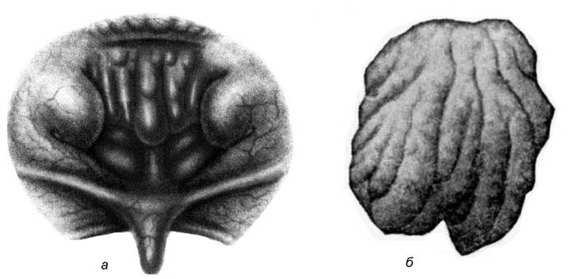
Дифференциальный диагноз — весьма ответственный этап в обследовании больного, поскольку носоглотка — это область, в которой могут развиваться многочисленные объёмные заболевания, принципиально отличающиеся от аденоидов. Дифференцировать аденоиды следует со всеми заболеваниями пазушно-носовой системы, сопровождающимися затруднением носового дыхания, слизисто-гнойными выделениями из носа и носоглотки, объёмными доброкачественными и злокачественными опухолями носоглотки, специфическими гранулёмами, врождёнными аномалиями носа и носоглотки (атрезия хоан). Особое внимание должно быть уделено рецидивирующим аденоидам, особенно у взрослых. В этих случаях необходимо исключить опухолевые процессы (инвертированная папиллома, эпителиома, саркома), для чего перед оперативным вмешательством проводят биопсию. по: Бабияк и соавт., т. 1, с. 585–586
Диагностика обычно не представляет больших затруднений. Характерны жалобы на затрудненное носовое дыхание, заложенность носа, полуоткрытый рот, особенно во время сна, нарушение слуха на одно или оба уха, склонность к отитам и заболеваниям верхних дыхательных путей — все это позволяет предположить наличие у ребенка аденоидов. При задней риноскопии можно определить величину и расположение аденоидов. Достаточно информативно пальцевое исследование носоглотки, при этом определяется ее консистенция, величина, особенности строения свода и задней стенки носоглотки, что важно и для дифференциальной диагностики. Обзорная рентгенография в боковой проекции также позволяет определить степень гипертрофии носоглоточной миндалины. В последние годы широко используются эндоскопические методы диагностики. Эндоскопами прямого и бокового видения можно тщательно осмотреть свод носоглотки, область слуховых труб, характер роста и расположение аденоидной ткани.
Аденоидные вегетации необходимо дифференцировать с ангиофибромой носоглотки, мозговой грыжей, антрохоанальным полипом. Ангиофиброма, в основном у мальчиков, отличается рецидивирующими кровотечениями в анамнезе, плотной консистенцией и выраженным сосудистым рисунком при задней риноскопии. Антрохоанальный полип исходит из верхнечелюстной или клиновидной пазух, имеет ножку, гладкую поверхность и бледно-розовый цвет, может баллотировать при форсированном дыхании или пальпации. Мозговая грыжа исходит из свода носоглотки, имеет гладкую овальную поверхность, серовато-голубой цвет. по: Пальчун, Магомедов, Лучихин, учебник, с. 320–321
Ребёнка с гипертрофированной глоточной миндалиной узнают по характерному внешнему виду. В анамнезе есть указания на частые респираторно-вирусные заболевания с затяжными насморками и последующим субфебрилитетом, прогрессирующее нарушение общего состояния ребёнка с поражением других ЛОР-органов. Размеры и консистенцию аденоидов определяют при задней риноскопии и с помощью пальцевого исследования носоглотки. Степень аденоидных разращений уточняют при боковой рентгенографии полости носа и носоглотки. Лабораторные исследования: клинические анализы крови и мочи, бактериологическое исследование отделяемого из носоглотки на микрофлору и чувствительность к антибиотикам, цитологическое исследование отпечатков с поверхности аденоидной ткани.
Непосредственный детальный осмотр носоглотки проводят методом задней риноскопии, при которой аденоидные вегетации визуализируются как образования неправильной формы с широким основанием, расположенные на своде носоглотки. На них находятся 4–6 продольных расщелин, из которых самая глубокая расположена в середине. Реже встречают разращения с шаровидной поверхностью, на которой отмечают отдельные глубокие карманы. Аденоидные вегетации у детей отличаются мягкой консистенцией и розовой окраской. У взрослых они обычно несколько плотнее и бледнее. В редких случаях встречают склерозированные, очень плотные образования. Видны слизистое отделяемое, заполняющее носоглотку и носовые ходы, набухание или гипертрофия носовых раковин. После анемизации слизистой оболочки полости носа во время фонации при передней риноскопии можно увидеть, как аденоидные разрастания перемещаются по задней стенке глотки. Косвенным признаком наличия аденоидов служат увеличенные нёбные миндалины и особенно гипертрофированные лимфоидные фолликулы задней стенки глотки. Характерно ограничение подвижности мягкого нёба.
Боковая рентгенография носоглотки — объективный метод определения степени гипертрофии аденоидной ткани, позволяющий также обнаружить особенности строения носоглотки, что имеет определённое значение при хирургическом вмешательстве. При затруднении проведения у детей раннего возраста задней риноскопии широко используют пальцевое исследование носоглотки. При гистологическом исследовании аденоиды состоят из ретикулярной соединительной ткани, петли которой выполнены лимфоцитами. В зародышевых центрах фолликулов видны лимфоциты в разных стадиях кариокинетического деления. Поверхность аденоидов покрыта многослойным цилиндрическим мерцательным эпителием. В некоторых участках эпителий пронизан эмигрирующими лимфоцитами. Дифференциальную диагностику проводят с опухолями, рубцами, деструктивными процессами при инфекционных гранулёмах, туберкулёзными натёчниками, гипертрофией задних концов нижних носовых раковин. Консультация терапевта показана при наличии сопутствующих заболеваний внутренних органов и систем организма; иммунолога-аллерголога — при сопутствующей бронхиальной астме или рецидивирующем трахеобронхите с астматическим компонентом; невропатолога — при эпилептиформных приступах и хорееподобных движениях мышц лица; эндокринолога — при тимомегалии, сахарном диабете. Пример формулировки диагноза: аденоиды II–III степени, двусторонний рецидивирующий средний отит, кондуктивная тугоухость (или другие сопутствующие заболевания). по: Нац. руководство, 2016, с. 826–827
Оценка носовых дыхательных путей может быть выполнена шпателем или большим гортанным зеркалом. Задняя риноскопия зеркалом обычно у детей невозможна, но многие переносят назоэндоскопию с гибким педиатрическим эндоскопом и местной интраназальной анестезией. Назоэндоскопия — высокоточный метод оценки состояния аденоида в амбулаторных условиях. Если эндоскопия не переносится, полезна оценка размеров аденоида по боковой рентгенограмме мягких тканей носоглотки, которая хорошо коррелирует с эндоскопической. Клиническая градация размера аденоида: степень I — аденоидная ткань заполняет одну треть вертикальной части хоан; степень II — от одной трети до двух третей хоан; степень III — от двух третей до почти полной обструкции хоан; степень IV — полная обструкция хоан. Пальпация — плохая мера гипертрофии аденоида. Если показанием к аденоидэктомии служит средний отит с выпотом, а не обструкция, размер аденоида не имеет значения. по: Scott-Brown, т. 2, с. 287–288
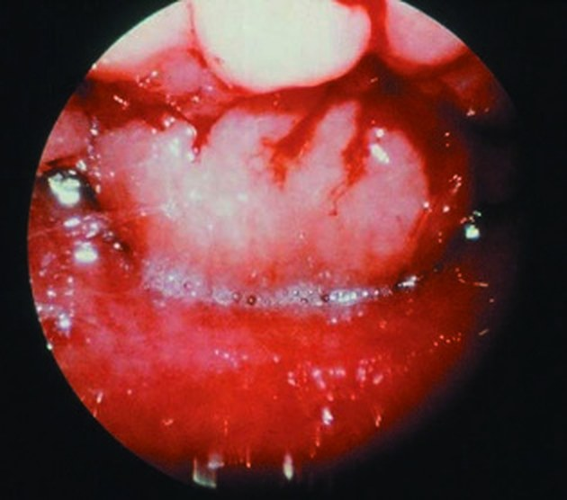
Прогноз зависит от общего состояния ребёнка, на фоне которого развился аденоидизм. Если причиной аденоидов явилась вульгарная инфекция, то с её ликвидацией и удалением аденоидов заболевание прекращается. Если причиной гиперплазии глоточной миндалины явился лимфатический диатез, то с удалением аденоидов системное заболевание не исчезает, а может проявиться аналогичной патологией в другом месте. Прогноз в отношении лицевых и скелетных деформаций, возникших при длительном течении заболевания, определяется возрастом больного. Если удаление аденоидов проведено в период продолжающегося развития скелета, то возможны определённые спонтанные коррекции в направлении индивидуальных генетически обусловленных форм, однако эти коррекции никогда не достигают предельного эффекта. по: Бабияк и соавт., т. 1, с. 586
Степени гипертрофии глоточной миндалины в разных книгах
Все книги определяют размер аденоидов при задней риноскопии (у маленьких детей — пальцевым исследованием или на боковой рентгенограмме), но отсчитывают его от разных ориентиров. Большинство мерит, какую часть сошника прикрывает аденоидная ткань; Солдатов и Заболотный — до какой носовой раковины она опускается; Овчинников — какую часть хоан закрывает. Практические руководства Пальчуна выделяют четыре степени, остальные книги — три, поэтому «III степень» в разных книгах означает разный размер. Таблица сводит описанное выше по книгам; столбцы — степени, в ячейке — граница аденоидной ткани в словах автора.
Таблица 1. Степени гипертрофии глоточной миндалины (составлено по текстам глав: Бабияк и соавт., т. 1, с. 580; Пальчун, Магомедов, Лучихин, учебник, с. 318–319; Пальчун и соавт., с. 250–252; Пальчун, учебник для колледжей, с. 163; Нац. руководство, 2016, с. 824; Богомильский, Чистякова, с. 264–265; Заболотный и соавт., с. 349; Солдатов, Гофман, гл. 3; Овчинников, Гамов, с. 206)
| Книга | Ориентир | I степень | II степень | III степень | IV степень |
|---|---|---|---|---|---|
| Бабияк и соавт. | Сошник, раковины, хоаны | Верхняя 1/3 сошника | Верхние 2/3 сошника (до заднего конца средней раковины) | Хоаны закрыты полностью (до задних концов нижних раковин) | — |
| Учебник Пальчуна, Магомедова, Лучихина | Сошник, хоаны | 1/3 сошника | 2/3 сошника | Хоаны закрыты полностью | — |
| Практические руководства Пальчуна (для врачей и для колледжей) | Сошник, хоаны | До 1/3 сошника | До 1/2 сошника | 2/3 сошника | Хоаны закрыты полностью |
| Национальное руководство, Богомильский | Сошник, носоглотка | Верхняя треть сошника | Половина сошника | Весь сошник, до заднего конца нижней раковины | — |
| Заболотный, Солдатов | Носовые раковины | До верхнего края сошника | До средней носовой раковины | Закрывает хоаны (у Солдатова — до нижних раковин и ниже) | — |
| Овчинников, Гамов | Хоаны | До верхнего края хоан | Верхние 2/3 хоан | Хоаны закрыты полностью | — |
Лечение аденоидов
Лечение должно быть комплексным, сочетать методы местного и общего воздействия, особенно в запущенных случаях, когда в лимфаденоидной ткани развивает ся воспалительный процесс и отмечаются соматические и психоинтеллектуальные нарушения. Такие дети должны быть осмотрены педиатром, детским психотера певтом, эндокринологом, сурдологом, фониатром и другими специалистами в соответствии с обнаруженными у них психосоматическими и функциональными нарушениями. Лечение в основном хирургическое (аденотомия и аденэктомия), особенно при аденоидах II и III степени.
У грудных детей удаление аденоидов проводят в обязательном порядке при нарушении носового дыхания, при шумном дыхании во сне (особенно при стри дорозном дыхании), при затруднении сосания (ребенок оставляет грудь, чтобы «перевести дыхание», или вообще отказывается от нее). Операция показана при повторных аденоидитах, сальпингоотитах, трахеобронхитах и т. п. У детей этой возрастной группы, у которых наблюдаются частые отиты, длительные периоды субфебрилитета, не объяснимого другими причинами; длительные периоды септицемии в отсутствие других значимых очагов инфекции (например, хронический тонзиллит), явления нейротоксикоза (судороги, менингизм, изменения соматических рефлексов), допускается проведение аденотомии даже в период обострения хронического аденоидита под прикрытием соответствующих антибактериальных препаратов.
Дети в возрасте 5–7 лет подлежат хирургическому лечению при аденоидном происхождении затруднения носового дыхания, нарушении фонации, воспали тельных заболеваниях среднего уха и их осложнениях. Аденотомию в этом возрасте проводят также при шейных аденитах, лимфатической лихорадке или суб фебрилитете неясной этиологии, повторяющихся адено амигдалитах, ринитах, синуситах, глазных инфекциях, ларинготрахеобронхитах, желудочно кишечных нарушениях, деформациях лицевого скелета и грудной клетки, рефлекторных нарушениях (спазм гортани и недержание мочи в ночное время, приступообразный конвульсивный кашель, головная боль).
Аденотомию у взрослых проводят даже в тех случаях, когда лимфаденоидная ткань носоглотки сконцентрирована вокруг устьев слуховых труб и препятствует выздоровлению при катаральных и гнойных отитах, риносинуситах, хронических бронхопневмониях.
Противопоказания
Аденотомию не проводят в тех случаях, когда глоточная миндалина, даже если она увеличена, не вызывает явлений аденоидизма и осложнений, описанных ранее. Противопоказанием к хирургическому лечению являются местные и общие воспалительные процессы банальной этиологии (острый аденоидит и тонзиллит, аденовирусная инфекция ВДП, острый насморк). Оперативное вмешательство проводят через 2–3 недели после завершения этих заболе ваний. Оперативное лечение противопоказано в период эпидемий инфекционных заболеваний (грипп), а также при туберкулезе в активной фазе, наличии очагов инфекции в зубочелюстной области, серопозитивном сифилисе, декомпенсированных состояниях при заболеваниях сердца и почек, гемофилии. Оперативное вмешательство откладывают при других заболеваниях, поддающихся консервативной терапии. Удаление аденоидов при врожденных дефектах мягкого и твердого неба (расщелины), а также при выраженной атрофии слизистой оболочки глотки в преозенозном состоянии и при озене усугубляет функциональные и трофические нарушения основного заболевания.
Хирургическое лечение
Большое внимание уделяют предоперационной подготовке, которая, в соответствии с общепринятыми правилами, включает ряд мероприятий: а) тщательно изучают анамнез, выясняя, не болел ли ребенок в последнее время инфекционными заболеваниями, не контактировал ли он в последние недели с больными детьми или не находился в эпидопасной среде; не страдает ли повышенной кровоточивостью; выясняют наследственные особенности; б) выполняют рентгенографию грудной клетки, анализы крови (клинический и показатели гемостаза), мочи, серологические пробы на туберкулез и сифилис и, по показаниям, другие исследования; исследуют мазки из глотки на носительство бациллы Леффлера; в) ребенка осматривают педиатр — для выявления противопоказаний к оперативному вмешательству, стоматолог и, по показаниям, другие специалисты; г) если операцию планируют проводить под общим обезболиванием, то накануне ребенка осматривает анестезиолог реаниматолог.
До хирургического вмешательства многие ЛОР педиатры рекомендуют про водить местное профилактическое антисептическое лечение для предупреждения послеоперационных гнойно воспалительных осложнений. Для этого за 3–4 дня до операции ребенку назначают капли в нос в виде 3% раствора протаргола, 20– 30% раствора сульфацила (альбуцида), а также за 1 неделю до оперативного вмешательства для улучшения гемостатических показателей — витамин C, глюконат кальция и др.
Операционная, в которой проводят аденотомию, должна быть оборудована всем необходимым для оказания помощи при носоглоточных кровотечениях (задняя тампонада носа, перевязка наружной сонной артерии), асфиксии (языкодержатель, наборы для интубации и трахеотомии), болевом шоке и коллапсе (набор лекар ственных средств, стимулирующих деятельность сердечно сосудистой и дыхатель ной систем, системы гипофиз—кора надпочечников, повышающих артериальное давление), по согласованию с реаниматологом.
Для проведения аденотомии необходим следующий хирургический инструментарий: роторасширитель, языкодержатель, аденотомы Бекмана двух размеров (рис. 16.17), подобранные по правилу В. И. Воячека , носовые щипцы Люка, длинные изогнутые ножницы и носоглоточные щипцы типа Любе Барбона (Lu bet Barbon F.; см. рис. 16.17) для грудных детей.
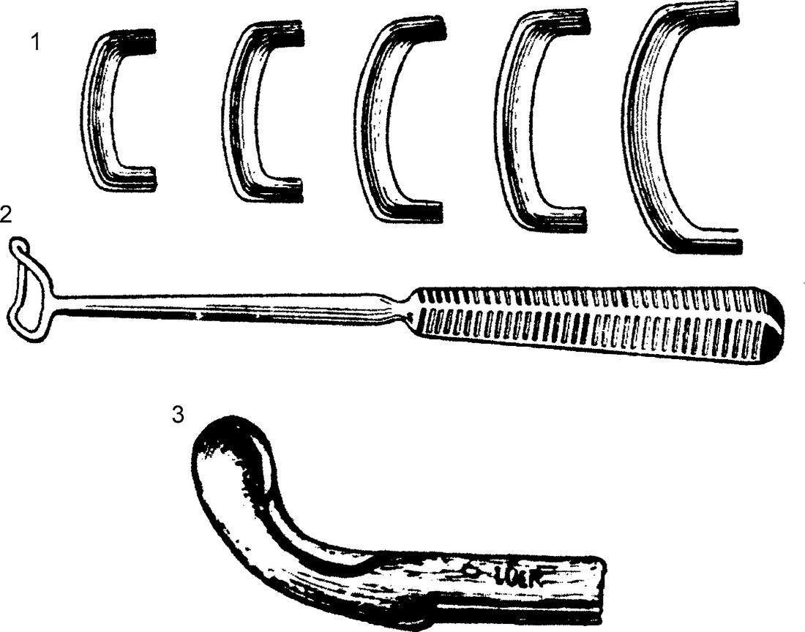
Для проведения оперативного вмешательства под общим обезболиванием необходимы средства для интубационного наркоза.
Положение ребенка во время оперативного вмешательства изображено на рис. 16.18. Рекомендуется перед операцией плотно завернуть его в простыню для иммобилизации конечностей. Ребенка усаживают на левое бедро помощника, который охватывает своими коленями ноги ребенка, правой рукой — грудь ребенка и удерживает его левую руку, под которой фиксирована правая рука, левой рукой фиксирует голову ребенка.
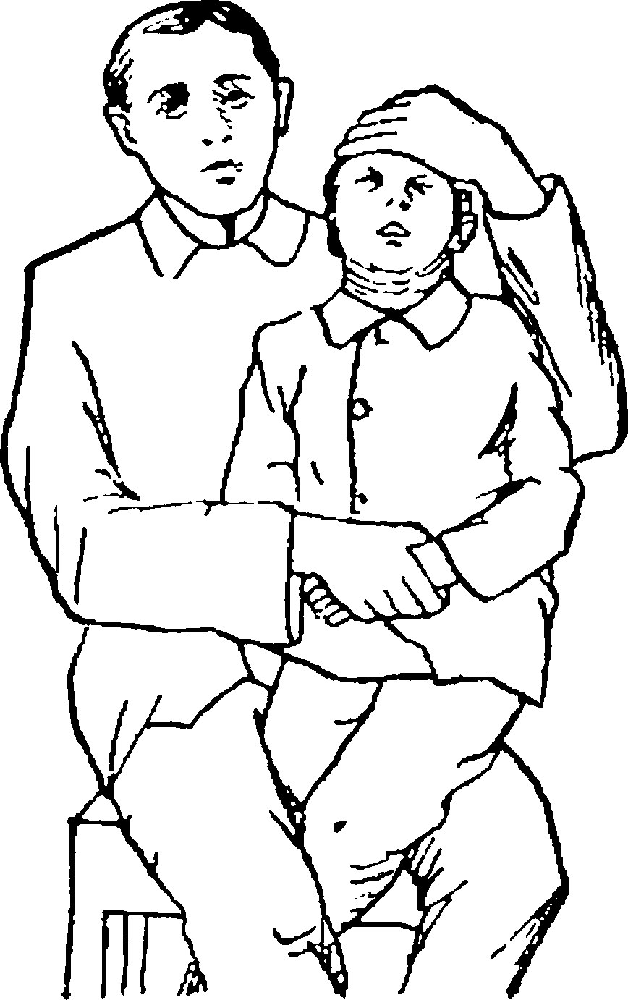
Анестезия
Грудным детям и детям до 2–3 лет операцию проводят без анестезии в амбулаторных условиях. После 2–3 лет некоторые авторы рекомендуют проводить кратковременный масочный наркоз с помощью эфира. Детям более старшего возраста и взрослым проводят аппликационную анестезию путем 3–4 кратного смазывания задних отделов слизистой оболочки носа и свода носоглотки 1–3% раствором дикаина или 5–10% раствором кокаина. Особенно тщательно анестезируют задний конец сошника. Анестезируют также заднюю стенку носоглотки и носо глоточную поверхность мягкого неба. Если применение местного обезболивания невозможно, операцию проводят под интубационным наркозом (рис. 16.19). мягкое небо (рис. 16.20, 1), при этом рукоятку инструмента держат таким образом, чтобы указательный палец фиксировал стержень аденотома; кольцо аденотома поворачивают на 90° относительно поверхности языка, про двигают по шпателю в направлении задней стенки глотки и, достигнув мягкого неба, заводят за него кольцо и разворачивают в обратном направлении так, чтобы лезвие заняло горизонтальное положение и дужка кольца была направлена в сторону ротового отверстия, т. е. режущей частью к задней стенке глотки; б) сложным движением аденотома (наклон рукоятки вниз, одновременное продвижение кольца вверх до свода носоглотки, прижатие дужки кольца к сошнику и без потери контакта с последним возведение кольца с упором в угол, образованный сошником и сводом носоглотки, небольшой наклон головы ребенка вперед) обеспечивают «стартовую позицию» инструмента для проведения основного этапа операции; при этой позиции аденотом занима ет наклонное положение, стержень его соприкасается с нижними резцами, дужка и кольцо прижаты к передней части свода носоглотки; в) быстрым движением вдоль свода носоглотки, прижимая кольцо аденотома кверху и кзади (см. рис. 16.20, 2) срезают аденоиды и вместе с ножом выносят их в полость рта и далее в почкообразный тазик; во время среза ния аденоидов помощник или сам хирург наклоняет голову ребенка книзу, чем достигается плотный контакт лезвия с удаляемым объектом и плав ное скольжение ножа по задней стенке носоглотки; как только аденоиды удалены, голову ребенка немедленно наклоняют книзу, чтобы кровь при обильном, но кратковременном кровотечении не попала в дыхательные пути, а излилась через нос и рот; иногда удаленные аденоиды остаются на лоскуте слизистой оболочки задней стенки глотки и свисают из за мягко го неба, их захватывают зажимом и срезают ножницами; г) после некоторой паузы, определяемой хирургом, всю процедуру повторяют при помощи аденотома меньшего размера для завершения «медиальной» аденотомии и удаления латерально расположенных остатков аденоидов, прикрывающих носоглоточные отверстия слуховых труб (см. рис. 16.20, 3); для этого аденотом вводят еще 2 раза. А. А. Горлина (1983) рекомендует во время этапа срезания аденоидов вести аденотом сверху вниз зигзагообраз но, чем достигается более полное их удаление; д) по завершении оперативного вмешательства ребенку предлагают высморкаться и проверяют качество носового дыхания, при этом следует иметь в виду (что устанавливается еще до операции), что носовое дыхание может существенно не улучшиться из за риногенных причин (полипы носа, гипертрофический ринит, искривление перегородки носа и др.). Кроме того, проводят пальцевое исследование носоглотки на предмет контроля тщательности аденотомии. Далее осматривают удаленные аденоиды и сравнивают их с картиной in vivo. Удаленные аденоиды следует показать родителям ребенка для удостоверения их в качественности проведенной операции, однако их следует также предупредить, что в редких случаях, несмотря на хорошо сделанную операцию, возможны рецидивы.
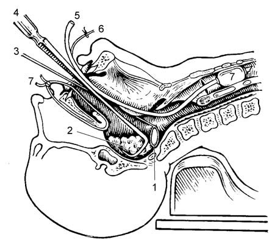
![Рис. 16.20. Этапы операции аденотомии (по Горлиной А. А., 1983): 1 — введение аденотома за мягкое небо; 2 — позиции аденотома при удалении аденоидов: а — первая позиция — дужка аденотома заведена за мягкое небо и прижата к сошнику, б — дужка аденотома возведена к своду носоглотки и движением, направление которого указано стрелкой, насажена на удаляемое образование; 3 — три направления движения аденотома, применяемые для аденоэктомии (удаления наряду с аденоидами и гиперплазированной аденоидной ткани в области носоглоточных отверстий слуховых труб); 4 — пальцевой контроль тщательности аденотомии](img/tb-aden-etapy.jpg)
При амбулаторном удалении аденоидов ребенка наблюдают в лечебном учреж дении в течение часа (он лежит на кушетке). Его периодически осматривает врач или опытная медицинская сестра на предмет отсутствия кровотечения и затем отправляют домой. В домашних условиях назначают постельный режим на 2–3 дня, исключают горячую пищу и напитки на 7–10 дней. Физическую активность ребенка ограничивают на 2 недели, школьников освобождают от занятий на 2 недели, от физической культуры — на 1 месяц. Детей старшего возраста и взрослых после уда ления аденоидов задерживают в стационаре на 3 дня с назначением постельного режима и, по показаниям, — соответствующих симптоматических средств. Для облегчения носового дыхания и удаления образующихся в послеоперационном периоде кровянистых корок назначают масляные капли в нос 3–4 раза в день.
На рис. 16.21 представлена схема этапов аденотомии, приведенная в известном учебнике В. И. Воячека «Основы оториноларингологии».
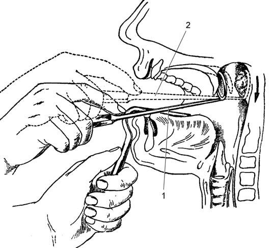
Осложнения во время и после аденотомии, хотя и редки, но могут вызывать опасные для жизни нарушения и причинять значительные затруднения в их уст ранении.
Самым частым осложнением после аденотомии является кровотечение, возникающее сразу после операции или через несколько часов после нее. При остальных благоприятных условиях причиной кровотечения является неполное удаление аденоидной ткани, которое может зависеть от следующих обстоятельств: несовпадение размера аденотома с величиной носоглотки, недостаточно высокое положение ножа при срезании аденоидов, которое может определяться неприжатием дуги коль ца к сошнику и недостаточно плотным прижатием лезвия к верхнезадней стенке свода носоглотки, а также если больной во время срезания аденоидов приподнимается. При таком кровотечении необходимо повторить операцию и тщательно удалить остатки аденоидной ткани и все обрывки слизистой оболочки на задней стен ке глотки конхотомом. Если кровотечение продолжается, необходимо выполнить заднюю тампонаду носа или предпринять другие мероприятия (см. далее раздел остановки кровотечений как осложнения после тонзиллэктомии).
Осложнения со стороны среднего уха (сальпингоотит, катаральный и острый гнойный средний отит) обусловлены тубарным или гематогенным заносом инфекции. Лечение обычное.
Послеоперационное повышение температуры тела до 37,5–38 °С без видимых причин — явление нередкое, продолжающееся не более двух дней. При более высокой и продолжительной температуре следует заподозрить сепсис, дифтерию, пневмонию, обострение туберкулеза легких. Проводимые мероприятия должны быть направлены на установление причины гипертермии и ее ликвидацию.
Рвота кровью может возникнуть через непродолжительное время после операции в том случае, если во время удаления аденоидов произошло ее заглатывание. Возникновение рвоты через несколько часов указывает на возобновившееся кровотечение. Такого ребенка необходимо немедленно доставить в стационар, его должен осмотреть врач для установления причины осложнения.
Иногда аденотом застревает в носоглотке, при этом невозможно закончить операцию и вывести нож в полость рта. Причиной этого чаще всего бывает чрезмерное сгибание головы во время срезания аденоидов или аномальное выстояние переднего бугорка первого шейного позвонка. В первом случае для выведения наружу ножа голове придают начальное положение. Во втором случае при не удавшемся выведении аденотома голове придают легкий наклон и форсированным движением срезают препятствие, находящееся на пути ножа. Случаются и такие казусы, как поломка кольца (ножа) и застревание его в носоглотке. Это происходит вследствие материального или конструктивного дефекта кольца или конца стержня аденотома, к которому приварен нож. В таких случаях без спешки пальцем или зажимом Микулича, щипцами Любе Барбона, введенными в носо глотку, нащупывают оставшийся там металлический предмет, захватывают его и осторожно удаляют. Неудавшуюся аденотомию тут же повторяют или, если при удалении инородного тела была травмирована носоглотка, повторную операцию откладывают на 1 месяц.
Травматические осложнения возникают при грубом оперативном вмешательстве. Например, при значительном давлении аденотомом на заднюю стенку носоглотки глубоко повреждается слизистая оболочка и в последующем может формировать ся рубцовый стеноз носоглотки. Сенехии и рубцовые деформации мягкого неба после аденотомии возникают у детей с врожденным сифилисом. Кривошея и ригидность шеи появляются в результате повреждения аденотомом апоневроза и превертебральных мышц с инфицированием поврежденных тканей и развитием пост воспалительного рубцового процесса. Это осложнение происходит в случаях, когда во время кюретажа голова пациента не наклонена вперед и плохо фиксирована помощником, а ребенок ее резко отклоняет кзади, что значительно увеличивает естественный шейный лордоз, выпуклость которого попадает под лезвие аденотома. Это осложнение выдает себя вынужденным положением головы ребенка, которое ха рактеризуется неподвижностью и экстензией головы. Описаны также случаи под вывиха атланта; заболевание получило название «носоглоточная кривошея», или синдром Гризеля, по имени описавшего его в 1930 г. французского врача P. Grisel62. Синдром носоглоточной кривошеи характеризуется смещением атланта в позицию люксации ротации вследствие односторонней контрактуры превертебральных мышц. Ребенок, прооперированный накануне по поводу аденоидов, просыпается утром с повернутой и наклоненной в сторону головой. При глубокой пальпации под углом нижней челюсти ребенок испытывает острую боль. Рентгенография верхних шейных позвонков выявляет признак люксации ротации атланта. Применение антибиотиков, противоотечных средств, гидрокортизона, физиотерапии приводит к выздоровлению в течение нескольких дней.
Результатом травмирования слизистой оболочки носоглотки может явиться и атрофический эпифарингит, который возникает после неоднократных аденото мий, проведенных разными специалистами по некорректным показаниям.
Результаты операции у большинства детей положительны; восстанавливается носовое дыхание, воспалительные заболевания ВДП быстро ликвидируются, воз вращается аппетит, повышается физическая и умственная активность, дальнейшее физическое и интеллектуальное развитие ребенка нормализуется. Однако, как показывают статистические данные, рецидивы аденоидов возникают в 2–3% случаев, и в первую очередь у детей, страдающих аллергией, проявляющейся атопической астмой, отеками Квинке, крапивницей, сезонными бронхитами. Как правило, рецидив аденоидов возникает при их неполном удалении, не ранее чем через 3 месяца после операции, и проявляется постепенным нарастанием затруднения носового дыхания и всех остальных признаков аденоидизма, которые наблюдались до оперативного вмешательства. Проведение аденотомии под контролем зрения под общим обезболиванием и при помощи современных видеохирурги ческих методов резко сокращает количество рецидивов.
Следует иметь в виду, что у аденотомированных детей даже при абсолютно свободном носовом дыхании остается привычка держать рот открытым, особенно в ночное время. Для устранения этой привычки проводят курсы специальной дыхательной гимнастики, определенные воспитательные мероприятия, иногда подвязывают платком нижнюю челюсть.
Консервативное лечение является вспомогательным методом, дополняющим хирургическое лечение. Его эффективность при развитых аденоидах сводится лишь к уменьшению воспалительных явлений и подготовке почвы к более благоприятно му течению послеоперационного периода. На самых ранних стадиях аденоидных разрастаний (I степень) это лечение может дать положительные результаты лишь при комплексном подходе, и в первую очередь — при ликвидации причины заболевания. Для этого проводят противоаллергическое и десенсибилизирующее лечение, укрепление иммунных функций организма, закаливание, санируют очаги инфекции, на сыщают организм витаминами A и D и необходимыми для гармоничного развития организма микроэлементами. Существенную роль в консервативном лечении придают гелиотерапии, УФО терапии, а в последние годы — и лазеротерапии. по: Бабияк и соавт., т. 1, с. 586–595
Предоперационное обследование
Рутинное предоперационное обследование не показано перед аденоидэктомией у детей ASA 1 или 2. Специфическое обследование показано при серповидно-клеточной анемии, талассемии, синдроме Дауна и врождённых пороках сердца. При подготовке следует исключить в анамнезе и в семье склонность к необычной кровоточивости или появлению синяков, поскольку рутинная коагулограмма может не подтвердить лёгкую болезнь Виллебранда; у детей с синдромом Дауна нужно учитывать возможную атлантоаксиальную нестабильность и пороки сердца. по: Scott-Brown, т. 2, с. 287–288
Цели лечения
При аденоидах цель лечения — восстановление свободного носового дыхания, профилактика развития сопутствующих заболеваний ЛОР-органов, внутренних органов и систем организма, обусловленных частыми заболеваниями верхних дыхательных путей и длительным нарушением носового дыхания. Показанием к госпитализации служит необходимость проведения операции аденотомии.
При аденоидите цель лечения — устранение бактериального очага в паренхиме аденоидных вегетаций для предотвращения рецидивирующего течения воспалительного процесса в носоглотке с распространением на полость носа, околоносовые пазухи, среднее ухо, трахеобронхиальное дерево. Срочная госпитализация показана при тяжело протекающей ретроназальной ангине с выраженной интоксикацией и гнойными осложнениями (заглоточный абсцесс и др.); плановая — для производства операции аденотомии. по: Нац. руководство, 2016, с. 827, 831
Выбор лечения
Лечение зависит не только от степени гипертрофии миндалины, но и от клинических проявлений. Гипертрофия аденоидов II–III степени является показанием к операции — аденотомии; при разрастаниях I степени показана консервативная терапия. В некоторых случаях, даже при незначительном увеличении аденоидов, когда нет выраженного нарушения носового дыхания, но имеется нарушение проходимости слуховой трубы, частые отиты, понижение слуха, ребёнку показано оперативное вмешательство — аденотомия. по: Пальчун, Магомедов, Лучихин, учебник, с. 321
Консервативное лечение аденоидов
Немедикаментозное лечение включает КУФ-тубус на заднюю стенку глотки и эндоназально, гелий-неоновое лазерное воздействие на аденоидную ткань, диатермию и УВЧ на регионарные заднешейные, заушные и затылочные лимфатические узлы, ирригационную терапию (так называемый назальный душ) для элиминации антигенов со слизистой оболочки полости носа и носоглотки с использованием минеральной воды, назальных спреев, озонотерапию, кислородные коктейли, грязелечение. Санаторно-курортное лечение (климатические и бальнеогрязевые курорты в тёплое время года): вакуум-гидротерапия с морской неразведённой и йодобромной водой, грязевым раствором, ингаляционная терапия после промывания носоглотки углекислыми водами, грязевым раствором, фитонцидами, растительными маслами, эндоназальный электрофорез грязевого раствора, фототерапия.
Медикаментозно назначают гомеопатические лимфотропные препараты или растительный лекарственный препарат тонзилгон Н в возрастной дозировке по различным схемам в течение 1–1,5 мес. Хирургическое лечение — аденотомия, крио-, лазеро- и ультразвуковая деструкция аденоидной ткани. Дальнейшее ведение — наблюдение отоларинголога, проведение дыхательной гимнастики и оздоровительных мероприятий. по: Нац. руководство, 2016, с. 827–828
Консервативные методы включают антигистаминную терапию, гомеопатические средства, местно — препараты, содержащие раствор серебра (колларгол, протаргол в нос), поливитамины, физиопроцедуры. по: Пальчун, Магомедов, Лучихин, учебник, с. 321
Руководство по детской оториноларингологии оценивает консервативное лечение аденоидов иначе: консервативное лечение аденоидов обычно малоэффективно, а применяемые при этом физиотерапевтические процедуры способствуют активизации их роста. Своевременное удаление аденоидов (аденотомия) устраняет раздражающее действие на миндалины инфицированной слизи из носоглотки, восстанавливается носовое дыхание, что нередко приводит к уменьшению миндалин. по: Богомильский, Чистякова, с. 266–267
Лечение аденоидита
При остром аденоидите назначают такое же лечение, как при острой ангине. В начале заболевания пытаются ограничить развитие воспаления и воспрепятствовать развитию нагноительного процесса. При наличии флюктуации производят вскрытие гнойника. Проводят антибактериальную, гипосенсибилизирующую, детоксикационную, ирригационную терапию, аэрозольные ингаляции антисептических средств. При остром аденоидите применяют тубусный кварц и гелий-неоновый лазер эндоназально и на заднюю стенку глотки, диатермию и электрофорез лекарственных средств на регионарные лимфатические узлы.
С учётом значительной роли лимфоидной ткани миндалин как органа иммунитета, формирующего иммунный барьер слизистой оболочки верхних дыхательных путей, придерживаются тактики консервативной органосохраняющей терапии хронического аденоидита на ранних стадиях заболевания. 3–4 раза в год проводят циклы комплексной терапии, включающей непосредственное воздействие на воспалительный процесс в носоглотке и общую терапию, направленную на укрепление состояния ребёнка, коррекцию иммунитета, купирование аллергических проявлений.
Обязательно проводят мероприятия по восстановлению носового дыхания (отсасывание отделяемого из носа у грудных детей и детей раннего возраста, закапывание сосудосуживающих растворов, колларгола или серебра протеината, содово-таниновых капель). При подозрении на развитие осложнений назначают антибиотики. У грудных детей не пользуются носовыми спреями сосудосуживающих средств, так как они могут вызвать рефлекторный ларингоспазм или бронхоспазм. по: Нац. руководство, 2016, с. 831–832
Аденоидные вегетации нарушают носовое дыхание, приводят к вышеописанным изменениям. Поэтому детям с аденоидами II и III степени выполняют операцию — аденотомию. Перед операцией проводят анализ крови, мочи, обследование у педиатра. Операцию выполняют амбулаторно через 1–2 мес после острого заболевания. Во время операции старшие дети сидят в операционном кресле с зафиксированными руками, маленьких детей фиксируют на руках у помощника. Аденоиды срезают специальным инструментом (аденотомом Бекмана), который вводят в носовую часть глотки через рот. После аденотомии кровотечение быстро прекращается. Если кровотечение продолжается, следует в носовую часть глотки ввести аденотом и удалить остатки аденоидной ткани. В случае значительного кровотечения проводят заднюю тампонаду большим тампоном, которым полностью заполняют носовую часть глотки. У больных хроническим аденоидитом через полгода-год после аденотомии аденоиды снова вырастают, часто достигая значительных размеров. В связи с этим при хроническом воспалении глоточной миндалины применяют комплексное лечение.
Больным хроническим аденоидитом назначают неспецифическую гипосенсибилизирующую и стимулирующую терапию, как и при хроническом тонзиллите. Местно можно назначить ингаляции с антибиотиками, к которым наиболее чувствительна микрофлора из носовой части глотки, с добавлением димедрола и суспензии гидрокортизона. Ингаляции проводят ежедневно в течение 3 нед с заменой антибиотика каждые 7 дней. Если нет возможности проводить ингаляции антибиотиков, рекомендуется трижды в день промывать носовую полость и носовую часть глотки щелочными растворами (1/4 чайной ложки пищевой соды на 250 мл тёплой воды) в течение 3 нед. В этот период можно назначать тубус-кварц, УВЧ, лазеротерапию. До окончания лечения 70% больных хроническим аденоидитом выздоравливают. 30% детей, у которых аденоиды уменьшаются незначительно, необходимо проводить аденотомию и в течение 2 нед после неё — консервативное лечение. по: Заболотный и соавт., с. 350–351
При стойкой гиперплазии аденоидных вегетаций с соответствующими клиническими симптомами, осложнениями со стороны полости носа, околоносовых пазух, среднего уха, трахеобронхиального дерева, при развитии вторичных аутоиммунных заболеваний, частых обострениях аденоидита, безуспешности проводимого консервативного лечения проводят аденотомию с последующим противорецидивным лечением. по: Нац. руководство, 2016, с. 833
Аденотомия: показания и противопоказания
Показания к аденотомии:
- частые простудные заболевания;
- резкое нарушение носового дыхания;
- гипертрофия аденоидов II и III степени, а при поражении уха — также аденоиды I степени, поскольку необходимо освобождение устья слуховой трубы;
- рецидивирующие и хронические трахеобронхиты, пневмонии, бронхиальная астма;
- рецидивирующие и хронические заболевания околоносовых пазух;
- тугоухость, секреторные, рецидивирующие и хронические отиты;
- нарушение речи, психоневрологические и рефлекторные расстройства (энурез, эпилептиформные расстройства).
по: Богомильский, Чистякова, с. 267
Противопоказаниями служат острые инфекционные заболевания, их предвестники или контакт с больными детскими инфекциями, заболевания крови (острый и хронический лейкоз, геморрагический диатез, иммунные гемопатии), бациллоносительство токсигенной коринебактерии дифтерии, острые заболевания ЛОР-органов или обострение хронических заболеваний, острые заболевания внутренних органов или обострение хронических заболеваний, декомпенсированные состояния при заболеваниях сердца, почек, печени и лёгких; кариес зубов, тимомегалия, аномалии сосудов глотки. по: Богомильский, Чистякова, с. 267
Таблица 2. Через какой срок после перенесённого заболевания можно выполнять аденотомию (по тексту руководства Богомильского и Чистяковой, с. 267)
| Перенесённое заболевание | Срок до аденотомии |
|---|---|
| Ангина, острое респираторное заболевание | 1 мес |
| Грипп | 2 мес |
| Профилактическая прививка | 2–3 мес |
| Ветряная оспа | 3 мес |
| Краснуха, скарлатина | 4 мес |
| Корь, коклюш, паротит, инфекционный мононуклеоз | 6 мес |
| Инфекционный гепатит | 1 год (после анализа крови на билирубин) |
| Менингит | 2 года |
После острых воспалительных заболеваний дыхательных путей и перенесённых ангин операцию можно производить спустя 1–1,5 мес.
Хирургическое лечение — аденотомия, часто проводится как в стационаре, так и в амбулаторных условиях, с предварительным обследованием, включающим клинический анализ крови, время кровотечения и время свертываемости, анализ мочи, при показаниях и другие анализы, осмотр педиатра (терапевта), санация полости рта. Противопоказаниями к хирургическому вмешательству являются болезни крови (геморрагический диатез, гемофилия, лейкоз), тяжелые заболевания сердечно-сосудистой системы, увеличение вилочковой железы. После острых воспалительных заболеваний дыхательных путей и перенесенных ангин операцию можно производить спустя 1–1,5 мес.
Техника аденотомии
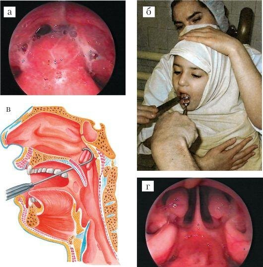
Операция производится кольцевидным ножом — аденотомом Бекмана под аппликационной анестезией, а в некоторых случаях и под кратковременным наркозом. Существует пять размеров аденотомов, по величине носоглотки подбирается соответствующий размер. Ребёнка фиксируют простынёй и усаживают на колени помощника, ноги ребёнка зажимают между колен, а руками фиксируют его голову. Шпателем прижимают язык ко дну рта, аденотом вводят в носоглотку по средней линии и продвигают вверх к куполу носоглотки по заднему краю сошника. При прижимании аденотома к куполу носоглотки и сошника аденоидная ткань входит в кольцо инструмента. После этого коротким и быстрым движением нож аденотома смещают книзу по задней стенке носоглотки, при этом аденоиды срезаются у основания и выбрасываются в полость рта или остаются висеть на тонкой полоске ткани, откуда их удаляют щипцами. Затем ребёнок поочерёдно высмаркивается через обе половины носа.
В некоторых случаях срезанные аденоиды попадают в нижний отдел глотки и проглатываются. Попадание аденоидной ткани в дыхательные пути опасно ввиду возможной асфиксии. В связи с возможностью таких осложнений предложены аденотомы, снабжённые корзинкой или зубчиками, которые удерживают срезанные аденоиды. После операции небольшое кровотечение быстро останавливается и ребёнка отпускают домой через 2–3 ч после контрольного осмотра глотки. Рекомендуется постельный режим в течение первых суток, полужидкая негорячая диета; следует избегать физических нагрузок, резких движений.
В последние годы в практику внедряется эндоскопическая аденотомия под наркозом с визуальным контролем операционного поля эндоскопами под различным углом зрения. Такая тактика позволяет безболезненно и с хорошим визуальным контролем удалить аденоидные вегетации. В некоторых случаях остатки аденоидной ткани могут гипертрофироваться, особенно у детей младшего возраста, при этом возникает необходимость повторного хирургического вмешательства. по: Пальчун, Магомедов, Лучихин, учебник, с. 321–322
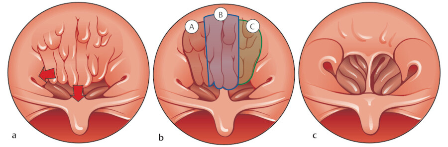
Перед операцией дети проходят обследование, минимум которого обеспечивает безопасность операции: общий анализ крови, свертываемость, время кровотечения, анализы для выявления ВИЧ, австралийского антигена; анализ мочи; санация зубов, мазок из зева и носа для выявления бациллоносительства токсигенной коринебактерии дифтерии; заключение педиатра о возможности оперативного вмешательства; отсутствие контакта с инфекционными больными. Ребенку назначают препараты, повышающие свертываемость крови. Операцию производят в условиях однодневного стационара, под местной анестезией, с помощью кольцевидного ножа — аденотома Бекмана. Используется также корзинчатый аденотом. Аденотом вводят в носоглотку строго по средней линии, затем продвигают кверху и кпереди до заднего края перегородки носа, прижимают верхнее ребро инструмента к куполу носоглотки. При этом аденоидная ткань входит в кольцо аденотома. Быстро и резко продвигают аденотом кпереди и вниз, срезая аденоиды. У детей аденоидные разращения часто сочетаются с гипертрофией нёбных миндалин. В этих случаях производят одновременно тонзиллотомию и аденотомию. Спустя 3 ч при отсутствии кровотечения после контрольного осмотра ребенка выписывают домой с рекомендацией домашнего режима, щадящей диеты, приема повышающих свертываемость крови средств, сульфаниламидных препаратов.
При аденотомии возможны следующие осложнения: анафилактическая реакция на анестезирующее средство, кровотечение. При кровотечении после аденотомии делают повторную аденотомию для удаления остатков аденоидов, проводят общие и местные гемостатические мероприятия. Осложнения включают также нагноение операционной раны с развитием регионарного лимфаденита, заглоточного, парафарингеального абсцесса, медиастинита, сепсиса, асфиксию при аспирации удалённого аденоида, травму мягкого нёба с последующим развитием его паралича и явлениями дисфагии и дисфонии, травму корня языка, которая обычно сопровождается сильным кровотечением, аспирационную пневмонию. по: Богомильский, Чистякова, с. 267–268
Осложнения при аденотомии
Иногда встречается кровотечение в ближайшем послеоперационном периоде, связанное с массивным остатком миндалины. Производится повторная аденотомия для удаления остатков аденоидной ткани, назначается гемостатическая терапия. Возможно инфицирование послеоперационной раны с развитием бокового или заглоточного абсцессов, повреждение устья слуховой трубы, попадание аденоидной ткани в дыхательные пути. При правильной подготовке к операции, ее проведении и послеоперационном режиме осложнения аденотомии редки и излечимы. по: Пальчун, Магомедов, Лучихин, учебник, с. 322–323
Прогноз
Прогноз в основном хороший. Своевременная диагностика и рациональная терапия острой ангины глоточной миндалины позволяет предотвратить тяжёлые гнойные осложнения. Диспансерное наблюдение и своевременное проведение курсов лечения хронического аденоидита в ряде случаев исключает необходимость проведения аденотомии, а главное, предотвращает развитие сопряжённых инфекционно-аллергических заболеваний внутренних органов и ЛОР-органов. по: Нац. руководство, 2016, с. 833
Аденоиды в учебнике Солдатова, Гофмана
У детей отмечается склонность к гипертрофии миндалин глотки, особенно носоглоточной, так называемые аденоиды. По разным авторам наличие аденоидов отмечается у детей до 14 лет от 5 до 45%. В период полового созревания миндалины обычно атрофируются, за исключением нёбных. Клиника и симптомы при аденоидах обусловлены их особым расположением на своде носоглотки, поэтому они затрудняют или полностью исключают носовое дыхание, вентиляцию слуховых труб, нарушают функцию глотки, что крайне неблагоприятно сказывается в том числе и на общем развитии организма ребенка: изменение черт лица, открытый рот, утолщение крыльев носа, неправильное развитие зубочелюстной системы, нарушение сна, приступы кашля, склонность к ангинам, средним отитам, пневмониям.
Помимо жалоб, анамнеза, общего осмотра для диагноза необходима задняя риноскопия (осмотр носоглотки), однако она у детей, особенно младшего возраста, затруднительна. Поэтому В. И. Воячек предложил при подозрении на аденоиды проводить переднюю риноскопию с предварительной анемизацией слизистой оболочки носа (например, раствором ксилометазолина или нафазолина). При этом аденоиды достаточно хорошо видны, а при произношении больным числа «три» наблюдается движение мягкого нёба для определения нижней границы аденоидов. Существует пальпаторный метод исследования аденоидов, при этом врач встает позади сидящего ребенка, левой рукой фиксирует голову, прижимая ее к себе, а указательным пальцем правой руки обследует носоглотку. Величина гипертрофии определяется тремя степенями: 1 — до верхнего края сошника, 2 — до средних носовых раковин, 3 — до нижних раковин и ниже. Обязательны осмотр глотки, нёбных миндалин, отоскопия для суждения о функции среднего уха и состоянии барабанной перепонки.
Консервативное лечение аденоидов различными маслами, четверть процентным раствором азотнокислого серебра, терапия ультрафиолетовыми или лазерными лучами редко дает стойкий лечебный эффект. Операция аденотомия более эффективна, особенно при сопутствующей патологии ЛОР-органов или легких. Производится чаще под местной аппликационной анестезией путем смазывания носоглотки специальной ватной кисточкой на зонде — ватодержателе. Помощник удерживает ребенка, предварительно обернутого в простыню для фиксации рук, на коленях. Хирург отдавливает шпателем язык и осторожно вводит под контролем зрения аденотом (кольцевой нож) за мягкое нёбо в носоглотку, мягко упираясь в свод, затем быстрым скользящим круговым движением аденотома удаляет аденоиды. Затем глотку осматривают, осушают ватными шариками, иногда удаляют свисающие в ротоглотку фрагменты аденоидов. Как правило, кровотечение незначительное, останавливается самостоятельно, осложнения редки. Судить об эффекте операции можно уже через 5–7 дней, после исчезновения реактивных явлений, по степени восстановления носового дыхания. по: Солдатов, Гофман, гл. 3
Аденоиды в учебнике Овчинникова, Гамова
Аденоиды (adenoides) — патологическая гипертрофия глоточной (третьей, или носоглоточной) миндалины. Гипертрофия может быть изолированной или сочетаться с гипертрофией нёбных миндалин. Глоточная миндалина ребенка, постоянно увеличиваясь, достигает максимума к возрасту 5–6 лет, после чего начинается период постепенного обратного развития этого лимфоидного скопления, которое к 12 годам обычно заканчивается. Однако такой нормальный цикл развития лимфоидной ткани в носоглотке может быть нарушен, и тогда возникает заболевание, которое принято называть аденоидами, или аденоидными разращениями (разрастаниями) носоглотки. Аденоиды могут быть и у детей до 1 года, и у взрослых. Причинами гипертрофии миндалины чаще являются детские инфекционные заболевания, повторные вирусные заболевания верхних дыхательных путей, аллергия, искусственное и смешанное вскармливание.
Нарушение носового дыхания, обильное выделение слизистого секрета, заполняющего носовые ходы и стекающего в носоглотку, хроническое набухание и воспаление слизистой оболочки носа. Дети спят с открытым ртом, сон часто бывает беспокойным и сопровождается громким храпом. Из-за плохого сна дети встают вялыми и апатичными. У школьников часто снижается успеваемость. Аденоиды нередко сопровождаются понижением слуха, особенно во время обострения насморка. Искажается речь, голос теряет звучность и приобретает гнусавый оттенок. Возникает так называемая закрытая гнусавость. Дети раннего возраста с трудом овладевают речью. Часты жалобы на упорную головную боль. Постоянное выделение слизистого секрета из носа вызывает мацерацию и припухание кожи верхней губы, а иногда экзему. Рот постоянно открыт, нижняя челюсть отвисает, носогубные складки сглаживаются, выражение лица в поздних стадиях малоосмысленное, из углов рта вытекает слюна, что придает лицу ребенка особое выражение, получившее название «аденоидное лицо». Постоянное дыхание через рот приводит к деформации лицевого скелета (готическое нёбо, укороченная альвеолярная дуга, вследствие чего зубы не умещаются на ней, растут в 2 ряда или косо). В результате длительного затрудненного носового дыхания деформируется грудная клетка, становясь уплощенной и впалой; нарушаются окислительные процессы, что приводит к обменным нарушениям в организме (в первую очередь страдает кислотно-основное состояние, происходит сдвиг в сторону ацидоза); дети отстают в физическом и психическом развитии от своих сверстников. При аденоидах нарушается деятельность желудочно-кишечного тракта, развиваются анемия, ночное недержание мочи, хореоподобные подергивания мышц лица, ларингоспазм, астматические приступы и т. д. Нередко гипертрофия глоточной миндалины сопровождается и ее хроническим воспалением — аденоидитом. При хроническом аденоидите легко инфицируются соседние органы — околоносовые пазухи (синуситы), среднее ухо (отиты). Дети с аденоидами часто страдают бронхолегочными заболеваниями.
Диагноз устанавливают на основании данных анамнеза, внешнего вида ребенка, задней риноскопии, результатов рентгенологического (в профильной проекции) и пальцевого исследования носоглотки. С помощью задней риноскопии и рентгенологического исследования определяют степень увеличения аденоидов, при пальцевом исследовании, кроме того, и их консистенцию. Различают три степени увеличения глоточной миндалины: I степень — аденоиды доходят до верхнего края хоан; II степень — аденоиды занимают значительную часть носоглотки и прикрывают верхние две трети хоан; III степень — аденоиды полностью закрывают хоаны.
При аденоидах I степени без выраженных нарушений носового дыхания, отсутствии патологических изменений в полости рта, уха и околоносовых пазух лечение консервативное: закапывание в нос 2% раствора серебра протеината или коллоидного серебра. Назначают КУФ-облучение и УВЧ на область носа, облучение носоглотки расфокусированным гелий-неоновым лазером. Из общеукрепляющих средств применяют препараты кальция внутрь, витамины С и D; проводят закаливание, дыхательную гимнастику, климатическое лечение.
В остальных случаях основным методом восстановления носового дыхания при аденоидах является хирургический — аденотомия, производимая с помощью специального окончатого ножа — аденотома. Операцию проводят обычно под местной анестезией, при необходимости под наркозом. В настоящее время аденоиды удаляют под контролем зрения с помощью специального прибора — дебридера с использованием эндоскопической аппаратуры. Противопоказанием к операции являются нарушение свертываемости крови, острые инфекционные заболевания, декомпенсированные формы почечной и печеночной недостаточности, тяжелая форма сахарного диабета и тяжелые заболевания сердечно-сосудистой системы. В первые 2–3 дня после операции назначают постельный режим. В течение 5–7 дней исключают горячую и грубую пищу (сухари, хлебные корки и др.), острые, кислые, соленые блюда, шоколад; не рекомендуются активные игры. При неосложненном послеоперационном периоде ребенок может посещать детский сад или школу через 5–7 дней после операции. Послеоперационные осложнения: кровотечение, аспирация аденоидной ткани, острый средний отит, парез мягкого нёба. Прогноз при своевременном лечении благоприятный. Своевременная аденотомия предотвращает все возможные осложнения, развивающиеся при аденоидных разращениях. по: Овчинников, Гамов, с. 204–206
Точка зрения зарубежных авторов
Британские авторы отмечают, что традиционно единственными вариантами при аденоидах с клиническими проявлениями были операция и выжидательное наблюдение. Сейчас накоплены данные о том, что интраназальные глюкокортикостероиды в виде спрея уменьшают размеры аденоидов и улучшают состояние: уменьшаются выпот в среднем ухе, пороги слуха, заложенность носа, ринорея, кашель, храп и апноэ сна. Эти данные получены в метаанализе рандомизированных исследований, однако сами исследования невысокого качества, и место топических стероидов в практике пока не определено. В Великобритании по-прежнему чаще всего выполняют аденотомию вслепую кюреткой; методы под контролем зрения (аспирационная коагуляция, микродебридер, коблация) дают меньшую кровопотерю (в среднем 4 мл против 50 мл) и меньше осложнений. Плановых предоперационных анализов детям без сопутствующих заболеваний авторы не рекомендуют, а большинство детей можно безопасно выписать домой в день операции. по: Scott-Brown, т. 2, гл. 26, с. 288–289
В немецком руководстве при увеличенных аденоидах рассматривают наблюдение, интраназальные стероиды и аденотомию. Аденоиды относительно наиболее велики по отношению к носоглотке около 7 лет, и после этого возраста с ростом ребёнка состояние часто улучшается само; есть данные, что длительное применение стероидного спрея уменьшает аденоиды. Увеличение миндалин или аденоидов у ребёнка не является абсолютным показанием к удалению: симптомы могут уменьшиться с возрастом, а операция не лишена риска и должна быть клинически обоснована. Перед аденотомией всем детям необходимо осмотреть мягкое нёбо, чтобы исключить подслизистую расщелину (её признаком может быть раздвоенный язычок): аденотомия может привести к нёбно-глоточной недостаточности, и тогда возможна частичная аденотомия под контролем зрения. по: Behrbohm и соавт., разд. 3.3.1
Гипертрофия нёбных миндалин
Врождённая гипертрофия нёбных миндалин наблюдается в детском, иногда в подростковом и юношеском возрасте, редко у взрослых. При отсутствии субъективных и объективных функциональных нарушений, включая признаки хронического воспаления, такие миндалины не подлежат хирургическому воздействию, но их владельцы должны периодически осматриваться ЛОР-специалистом, желательно одним и тем же, для оценки динамики их состояния.
Однако чаще всего чрезмерная гипертрофия нёбных миндалин, особенно у маленьких детей, вызывает ряд нарушений: увеличенные миндалины препятствуют нормальному носовому дыханию, нормальному функционированию мягкого нёба (нарушение фонации — искажение произношения носовых согласных, звука «р»). В свою очередь нарушение носового дыхания обусловливает возникновение в полости носа так называемого парникового эффекта, влекущего за собой явления вазомоторного ринита, инфицирование полости носа, распространение инфекции на носоглоточную миндалину, слуховую трубу и среднее ухо. Как у детей, так и у взрослых, страдающих аномальной гиперплазией нёбных миндалин, указанные симптомы резко усиливаются в ночное время. К ним присоединяются храп, апноэ, беспокойный сон с кошмарными сновидениями. Утром такие больные просыпаются усталыми, неотдохнувшими, с отсутствием аппетита, головной болью и раздражительностью. по: Бабияк и соавт., т. 1, с. 637
Гипертрофию нёбных миндалин условно разделяют на 3 степени. Ориентирами для определения степени гипертрофии миндалин (по Б. С. Преображенскому) являются горизонтальная линия, проведённая через середину передней дужки, и вертикальная — через середину язычка. Горизонтальная линия от середины передней дужки до пересечения с вертикальной делится на три части: гипертрофия I степени — увеличение миндалины на 1/3 этого расстояния; II степень гипертрофии — миндалина занимает 2/3 промежутка; если миндалина прикрывает более 2/3 условной горизонтальной линии, это является признаком гипертрофии III степени.
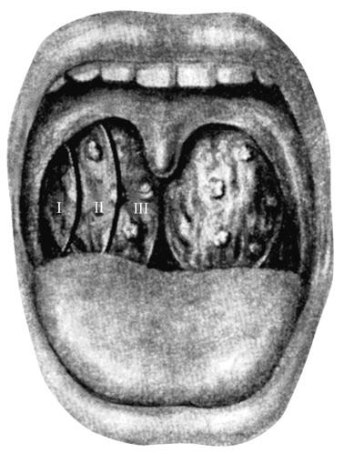
Тонзиллотомия производится, как правило, при III степени гипертрофии нёбных миндалин, которые вызывают затруднение носового дыхания, глотания, нарушение тембра голоса и др. Операция проводится в сидячем положении. Производится смазывание нёбных дужек и нёбных миндалин аппликационными анестетиками. Обычно используют тонзиллотом Матье гильотинного типа с вилочкой для удержания срезаемой медиальной части миндаликовой ткани. Удаляют зевную часть нёбных миндалин, достаточную для формирования просвета ротоглотки. Часто у детей с гипертрофией нёбных миндалин имеются показания и к аденотомии, в таких случаях тонзиллотомия производится одномоментно с удалением аденоидов — аденотонзиллотомия. Необходимо помнить, что тонзиллотомия может приводить к рубцовой деформации лакун миндалин и нарушению её дренирующей функции в послеоперационном периоде. по: Пальчун и соавт., с. 255–256
Для удаления таких миндалин в разное время разрабатывались различные способы механического и физического воздействия. К механическому способу удаления гипертрофированной нёбной миндалины относится тонзиллотомия, для осуществления которой применяется тонзиллотом Матье, представляющий собой специальное устройство, состоящее из кольцевидного ножа, двойного гарпуна для фиксации нёбной миндалины, одной неподвижной ручки для большого пальца и двух подвижных для II и III пальцев, натяжение которых приводит в движение нож тонзиллотома и срезает миндалину. Кровотечение при этом вмешательстве незначительное и быстро останавливается обычным прижатием ватного шарика к раневой поверхности.
Французские авторы предложили способ кускования, или выкусывания (morcellement) нёбных миндалин, применявшийся вместо тонзиллотомии, когда последнюю нельзя провести в силу малых размеров миндалин, а тонзиллэктомию выполнять нежелательно, например у маленьких детей. Операция заключается в том, что круглым конхотомом миндалину выкусывают по частям, при этом особое внимание обращают на удаление верхнего полюса, так как именно в нём, по мнению многих клиницистов, сосредоточено большинство патологических элементов, составляющих основу хронического очага инфекции. Принцип диатермокоагуляции был использован для разработки глубинной коагуляции нёбных миндалин по всей их поверхности. Несмотря на кажущиеся преимущества этого метода (бескровность, способность к регенерации оставшейся лимфоидной ткани) он не лишён ряда существенных недостатков: никогда не известна точная глубина коагуляции, трудно её дозировать, есть риск коагуляции крупных артерий с последующим аррозионным кровотечением, невозможно радикальное удаление всей миндалины.
Помимо описанных способов тонзиллотомии в разное время разрабатывались и иные способы деструктивного лечения хронического тонзиллита и удаления «лишней» миндаликовой ткани. Так, еще в начале XX в. французский оториноларинголог E. Эскат (1908) разработал методику электротомии небных миндалин с помощью петли накаливания, подключенной к источнику электрического тока. Петлю надевали на тело миндалины, при включении электрического тока нака ливали до красного цвета и путем постепенного сдавливания миндалины прожи гали ее. Позже этот метод был использован в США, но в качестве деструктивного фактора использовался принцип диатермокоагуляции, основанный на способности тока высокой частоты нагревать ткани до температуры, при которой происходит необратимая коагуляция белков. Постепенное сжатие петли приводило к про жиганию миндаликовой ткани и ее отделению от основной массы. ных пространств образуются кисты. На таком же принципе основана и криохирургия небных миндалин, получившая в конце XX в. достаточно широкое распространение. по: Бабияк и соавт., т. 1, с. 638–639
Гипертрофия нёбных миндалин в учебнике Пальчуна, Магомедова, Лучихина
Увеличение нёбных миндалин, как и увеличение остальной лимфаденоидной ткани глоточного кольца, чаще встречается в детском возрасте. Причинами гипертрофии могут служить частые повторные острые воспаления, или же она является отражением врожденной общей гиперплазии лимфаденоидной ткани. Увеличенные нёбные миндалины могут являться причиной нарушения дыхания и дикции, а иногда и приема пищи. В тех случаях, когда наряду с нёбными миндалинами увеличены и аденоиды, дыхательная функция резко нарушена, ребенок плохо спит, возникает кашель по ночам, храп, частое пробуждение, в связи с гипоксией мозга могут развиваться нервно-психические расстройства. по: Пальчун, Магомедов, Лучихин, учебник, с. 315
Диагностика не представляет особых затруднений и основывается на характерной фарингоскопической картине. Условными ориентирами для определения степени гипертрофии миндалин (по Преображенскому Б. С.) являются горизонтальная линия, мысленно проведенная от нёбно-язычной дужки по краю язычка, и вертикальная — через середину язычка, расстояние между ними делится на три части (рис. 3.23):
- Гипертрофия I степени — увеличение миндалины на 1/3 этого расстояния.
- II степень гипертрофии — миндалина занимает 2/3 промежутка.
- III степень гипертрофии — доходит до язычка, и миндалины соприкасаются друг с другом.
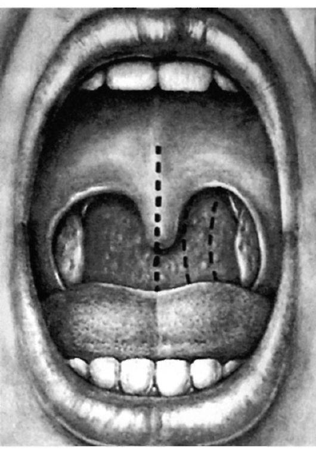
Гипертрофия нёбных миндалин не является признаком воспалительного процесса, однако ее необходимо дифференцировать с хроническим гипертрофическим тонзиллитом, который характеризуется частыми ангинами в анамнезе и фарингоскопическими признаками хронического воспаления. Кроме того, простую гипертрофию нёбных миндалин необходимо дифференцировать с опухолевыми процессами — лимфосаркомой (как правило, поражение одной миндалины), лимфогранулематозом, при котором наблюдается гиперплазия периферических лимфоузлов. Для опухолевых процессов характерна асимметрия, повышенная плотность ткани, изъязвления и регионарные метастазы. Исследование крови и биопсия с гистологическим исследованием проясняют диагноз. В редких случаях под видом гипертрофии может скрываться внутриминдаликовый «холодный» абсцесс или киста, распознаванию которых могут помочь флюктуация при пальпации и получение гноя при пункции с отсасыванием.
Лечение зависит от клинической симптоматики. Если увеличенные нёбные миндалины приводят к нарушению дыхания, расстройству речи и др., что наблюдается при II–III степени гипертрофии, производят частичное их удаление — тонзиллотомию: отсекаются части миндалин, выступающие за пределы нёбных дужек. В большинстве случаев тонзиллотомия производится детям в возрасте 5–7 лет. Она может быть выполнена в амбулаторных условиях, при условии постоянного наблюдения за больным до заживления раны. Операция производится в сидячем положении, с применением аппликационной анестезии (10% лидокаина). Обычно используют тонзиллотом Матье гильотинного типа с вилочкой для удержания срезанной миндаликовой ткани. Иногда можно использовать и петлю Бохона, в этом случае удаляемая часть миндалины фиксируется зажимом Кохера. Часто у детей с гипертрофией нёбных миндалин имеются показания к аденотомии. В таких случаях тонзиллотомия производится одномоментно с удалением аденоидов — аденотонзиллотомия. по: Пальчун, Магомедов, Лучихин, учебник, с. 315–317
Гипертрофия нёбных миндалин в учебнике Заболотного и соавт.
Гипертрофия нёбных миндалин встречается преимущественно в детском возрасте как проявление общей гиперплазии лимфаденоидной ткани. Гипертрофия нёбных миндалин может сочетаться с гипертрофией других отделов глоточного лимфаденоидного кольца и главным образом с гипертрофией глоточной миндалины. Существует ряд гипотез о причинах гипертрофии лимфаденоидной ткани у детей. По одной, наиболее ранней из них, причиной этого являются конституциональные особенности детского организма. Согласно этой гипотезе, такие дети являются носителями определенного лимфатического диатеза, что подтверждается фактом наследования данного конституционального типа от родителей. Тем не менее следует учитывать и другие факторы: неправильное питание (перекармливание), неблагоприятные социально-бытовые условия, гормональные влияния (дисфункция вилочковой железы). Гипертрофированные бледно-розового цвета миндалины резко увеличены, выступают за края нёбных дужек, рыхлой консистенции с четко обозначенными криптами, гладкой поверхностью. В большинстве случаев в миндалинах отсутствуют воспалительные изменения. Во время микроскопии обнаруживают большое количество фолликулов с частыми участками митозов, что является признаком высокой функциональной активности лимфаденоидной ткани. Кроме лимфоцитов в фолликулах встречаются моноциты, определяются измененные нервные элементы. Со временем эти «физиологически» гипертрофированные миндалины претерпевают обратное развитие и уменьшаются до нормальных размеров. Иногда эта инволюция задерживается, тогда и у взрослых можно наблюдать относительно большие миндалины без воспалительных изменений.
Гипертрофия нёбных миндалин может сочетаться с признаками их хронического воспаления. При этой форме миндалины более плотные, их аденоидная ткань бедна лимфоидными элементами и богата соединительной тканью. Дальнейшее развитие и сморщивание соединительной ткани приводят к уменьшению и атрофии миндалин. Различают три степени гипертрофии нёбных миндалин: I — миндалины занимают 1/3 расстояния от нёбно-язычной дужки до средней линии зева; II — 2/3 этого расстояния; III — миндалины смыкаются между собой.
Симптомы гипертрофии нёбных миндалин таковы: 1) нарушение ротового дыхания; 2) нарушение глотания; 3) нарушение фонации; 4) кашель. Наиболее серьезные нарушения дыхания проявляются значительной одышкой. Она вызвана нарушением дыхания через гортань и наблюдается преимущественно у маленьких детей, так как нижние полюса увеличенных миндалин сдавливают надгортанник, расположенный у маленьких детей высоко и под углом, усложняя тем самым доступ воздуха к голосовой щели. Состояние ребенка ухудшается в горизонтальном положении, хотя при склонности к одышке может возникать и в положении сидя. Нарушение глотания и фонации объясняется уменьшением полости глотки, а также значительным ограничением подвижности мягкого нёба. Голос приобретает гнусавый оттенок, ночью дыхание сопровождается храпом. Увеличенные миндалины могут стать причиной рефлекторного кашля, чаще всего ночью. Дети с гипертрофией миндалин обычно тяжелее переносят такие инфекции, как скарлатина, дифтерия и пр.
В случае слабо выраженной степени гипертрофии нёбных миндалин можно назначать щелочные или вяжущие полоскания для уменьшения отечности и явлений воспалительного раздражения. Полезно смазывать миндалины раствором Люголя или 2–3% раствором азотнокислого серебра. Показано общеукрепляющее лечение: диетическое (разнообразная богатая витаминами, особенно А и D, пища), медикаментозное (препараты железа, йода), климатическое (пребывание на берегу моря и в горах). Если миндалины плотные, богатые соединительной тканью, препятствуют дыхательной и глотательной функциям, а консервативное лечение малоэффективно, проводят тонзиллотомию — операцию по частичному удалению миндалин. Обычно ее выполняют в амбулаторных условиях под местной терминальной анестезией с помощью гильотинообразного ножа — тонзиллотома. В течение 2 ч после операции ребенок находится под наблюдением врача, а последующие 3–5 дней придерживается домашнего режима. по: Заболотный и соавт., с. 346–347
Лечение гипертрофии нёбных миндалин у детей
При гипертрофии нёбных миндалин применяют физические методы, климатическое и общеукрепляющее лечение. При резком увеличении нёбных миндалин и безуспешности консервативной терапии их частично удаляют (тонзиллотомия), в большинстве случаев одновременно с удалением аденоидов. Операция производится амбулаторно под местной анестезией. После наложения тонзиллотома на выступающую из-за дужек часть миндалины ее фиксируют вилкой и быстро снимают. Послеоперационный режим и назначения такие же, как после аденотомии. К недостаткам тонзиллотомии относится неполное удаление нёбной миндалины, особенно при сочетании гиперплазии и воспаления миндалины. Среди осложнений наиболее часто наблюдаются кровотечение, нагноение операционной раны, шейный лимфаденит, травма мягкого нёба. по: Богомильский, Чистякова, с. 266
Гипертрофия нёбных миндалин в учебниках Солдатова, Гофмана и Овчинникова, Гамова
Гипертрофия нёбных миндалин встречается у детей реже. Различают три степени гипертрофии в зависимости от сужения зева: 1-я — сужение на 1/3; 2-я — сужение на 2/3; и 3-я, когда миндалины соприкасаются по средней линии. Неправильно считать гипертрофию признаком хронического тонзиллита, однако увеличенные миндалины, как и обычные, могут быть поражены хроническим процессом. Увеличение миндалин сопровождается кашлем, поперхиванием, гнусавостью голоса, повышенным рвотным рефлексом, а в сочетании с хроническим тонзиллитом — частыми ангинами. Лечение оперативное. Под местной анестезией специальным тонзиллотомом (кольцевые ножницы) срезаются части миндалин, выступающие за дужки. Осложнений практически не бывает. по: Солдатов, Гофман, гл. 3
Гипертрофия нёбных миндалин нередко сочетается с аденоидами. Встречается чаще в детском возрасте как проявление гипертрофии лимфоидной ткани глотки. Различают три степени гипертрофии. Если миндалина занимает одну треть расстояния от свободного края передней нёбной дужки до средней линии глотки, то говорят о I степени, если две трети — о II степени, а если миндалина доходит до средней линии — о III степени гипертрофии. С возрастом гипертрофированные миндалины могут подвергаться обратному развитию. Заболевание проявляется механическим препятствием для нормального дыхания, речи и приема пищи. По ночам, особенно у детей, может возникать рефлекторный кашель. Такие дети тяжело переносят скарлатину, дифтерию. При фарингоскопии обращают на себя внимание резко увеличенные, бледно-розового цвета нёбные миндалины, мягкие при надавливании шпателем, выступающие из-за нёбных дужек и при рвотных движениях; соприкасаясь, они закрывают вход в глотку. В гипертрофированных нёбных миндалинах у детей воспалительных явлений, как правило, нет. Сочетание гипертрофии глоточной и нёбных миндалин рассматривают как назофарингеальную обструкцию. Одним из важных симптомов в этих случаях бывает храп в сочетании с апноэ во сне. Назначают полоскание растворами щелочных или вяжущих средств, смазывание раствором Люголя, общеукрепляющие средства — витаминотерапию, климатическое лечение (горный климат, пребывание на берегу моря). При неэффективности консервативного лечения и отсутствии противопоказаний производят операцию — тонзиллотомию (частичное удаление нёбных миндалин) или крио- и лазердеструкцию. по: Овчинников, Гамов, с. 207
Гипертрофия нёбных миндалин в учебнике Пальчуна для колледжей
Гипертрофия нёбных миндалин, так же как и носоглоточной миндалины, чаще бывает в детском возрасте; при этом она обычно сочетается с аденоидами, что отражает общую гиперплазию лимфаденоидной ткани. Увеличенные, больших размеров миндалины могут мешать ротовому дыханию и проглатыванию пищи; затрудняют речь. В тех случаях, когда, кроме гипертрофии миндалин, есть аденоиды, дыхательная функция часто нарушена. При этом у ребенка возможны мучительные приступы удушья во время сна, его беспокоит кашель, он часто просыпается; в связи с этим возникают признаки нервной и психической дистонии и другие расстройства. Диагноз устанавливают при фарингоскопии. Условными ориентирами для определения величины миндалин (по Преображенскому Б. С.) служат край передней дужки и средняя линия глотки (язычок); расстояние между ними делят на три части. Увеличение миндалины на 1/3 этого расстояния расценивают как гипертрофию I степени; если миндалина занимает 2/3 промежутка, ее относят ко II степени гипертрофии; если же она доходит до язычка, это III степень гипертрофии.
Простую гипертрофию нёбных миндалин нужно дифференцировать от хронического гипертрофического тонзиллита, характеризующегося ангинами в анамнезе и фарингоскопическими признаками хронического воспаления. Для опухолевых процессов характерны асимметрия и неравномерное увеличение миндалин. Исследование крови и биопсия с гистологическим исследованием кусочка ткани проясняют диагноз. В редких случаях под видом гипертрофии может скрываться холодный абсцесс — внутриминдаликовый или паратонзиллярный. Лечение при выраженных формах гипертрофии нёбных миндалин хирургическое: проводят частичное их удаление — тонзиллотомию, при которой отсекают часть миндалины, выступающую за пределы нёбных дужек. При небольшой гипертрофии лечение можно не проводить. по: Пальчун, учебник для колледжей, с. 162
Гипертрофия нёбных миндалин в национальном руководстве
Синоним: гипертрофический тонзиллит. Гипертрофия нёбных миндалин, подобно гипертрофии глоточной миндалины, чаще возникает в детском возрасте как проявление общей лимфатической конституции. В гипертрофированных миндалинах в большинстве случаев отсутствуют воспалительные изменения. Коды по МКБ-10: J35.1 Гипертрофия миндалин (увеличение миндалин); J35.3 Гипертрофия миндалин с гипертрофией аденоидов; J35.8 Другие хронические болезни миндалин и аденоидов; J35.9 Хроническая болезнь миндалин и аденоидов неуточнённая. Наблюдают преимущественно в раннем детском возрасте на фоне возрастного физиологического иммунодефицита.
Профилактика — своевременное удаление аденоидов, после чего прекращается раздражающее действие на нёбные миндалины инфицированной слизи из носоглотки при часто рецидивирующем течении аденоидита, восстанавливаются свободное носовое дыхание и защитные механизмы полости носа, ребёнок перестаёт дышать через рот, миндалины не подвергаются постоянному охлаждению и инфицированию, уменьшается сенсибилизация организма. Скрининг — осмотр полости рта при фарингоскопии на любом этапе оказания медицинской помощи. Выделяют три степени гипертрофии нёбных миндалин. При I степени гипертрофии нёбные миндалины занимают наружную треть расстояния от нёбной дужки до средней линии зева, при II степени занимают 2/3 этого расстояния и при III степени миндалины соприкасаются друг с другом, а иногда заходят друг за друга. По этиопатогенетическому признаку выделяют три формы гипертрофии нёбных миндалин: гипертрофическую, воспалительную и гипертрофически-аллергическую.
Гипертрофию нёбных миндалин рассматривают как иммунореактивное состояние, служащее одним из проявлений мобилизации компенсаторных возможностей лимфоидного глоточного кольца в процессе адаптации организма к постоянно меняющимся условиям жизни. Этому способствуют постоянное охлаждение миндалин в результате ротового дыхания при гипертрофии аденоидов, особенно в зимнее время; раздражающее действие на нёбные миндалины оказывает инфицированная слизь из носоглотки при рецидивирующем течении аденоидита. Гиперплазии способствуют повторные воспалительные заболевания носо- и ротоглотки, детские инфекционные болезни, недостаточное питание, плохие бытовые условия и другие факторы, снижающие защитные функции организма. Известное значение имеют лимфатико-гипопластическая аномалия конституции, эндокринные нарушения, особенно гипофункция коры надпочечников, гиповитаминоз, длительное воздействие малых доз радиации. В основе гипертрофии лимфоидной ткани миндалин лежит увеличение числа лимфоидных клеток, в частности избыточная пролиферация незрелых Т-лимфоцитов. по: Нац. руководство, 2016, с. 833–834
Отмечают многообразие факторов, приводящих к гипертрофии нёбных миндалин:
- У детей до 3 лет существует Т-хелперная недостаточность, не позволяющая обеспечить адекватную дифференцировку В-лимфоцитов в плазмоциты и соответственно продукцию полноценных антител. Нарушения в иммунной системе в результате частых инфекционных заболеваний на фоне физиологического иммунодефицита у детей раннего возраста, постоянная антигенная бактериальная и вирусная стимуляция приводят к компенсаторному увеличению лимфоидной ткани. Критическим периодом становления иммунологической реактивности ребёнка считают возраст 4–6 лет, соответствующий наибольшему количеству проводимых профилактических прививок.
- Гипертрофию нёбных миндалин определяют как проявление особой иммунопатологической предрасположенности детского организма в виде лимфатического диатеза (лимфатизма), в основе которого лежит наследственная склонность к недостаточности лимфоидной системы. Истинную гипертрофию лимфоидной ткани миндалин рассматривают как основной признак лимфатического диатеза, вызывающего увеличение числа лимфатических клеток, различных по своей структуре и функции.
- Основное значение в формировании гипертрофии нёбных миндалин придают возникающим в лимфоидной ткани миндалин аллергическим реакциям, что подтверждает обнаружение в удалённых фрагментах гипертрофированных миндалин большого числа тучных клеток в различных стадиях дегрануляции, плазматизации лимфоидной ткани и больших скоплений эозинофилов.
Гипертрофия нёбных миндалин — обратимый процесс, у подростков начинается возрастная инволюция лимфоидной ткани.
Гипертрофия нёбных миндалин часто сочетается с гипертрофией всего глоточного лимфоидного кольца, особенно с гипертрофией глоточной миндалины. Резко увеличенные нёбные миндалины выглядят по-разному. Они могут быть на ножке, слабо примыкающими к нёбным дужкам, с гладкой поверхностью, свободными лакунами. Чаще увеличенные нёбные миндалины бывают плотноэластической консистенции; в некоторых случаях они распластаны, мягкой консистенции, с развитым нижним полюсом, без признаков воспаления и спаянности с нёбными дужками, имеют бледно-желтоватый или ярко-розовый цвет, окаймлены нёбными дужками и треугольной складкой снизу; лакуны обычного строения, не расширены. Гистологически определяют преобладание гиперплазии лимфоидной ткани с увеличением площади фолликулов и числа митозов при отсутствии макрофагов и плазматических клеток.
При выраженной гипертрофии нёбные миндалины служат существенным препятствием для дыхания и глотания, что приводит к выраженной дисфонии, дисфагии и шумному дыханию. Затруднено формирование речи, бывает выражена гнусавость и неразборчивость речи, неправильное произношение некоторых согласных. Развитие дисфонии объясняют изменением формы резонирующих полостей (надставной трубки), а также ограничением подвижности мягкого нёба, особенно при интрамуральной гипертрофии нёбных миндалин, когда значительная масса их скрыта в глубине дужек. Характерны беспокойный сон в связи с гипоксией, храп во сне, приступы обструктивного апноэ вследствие расслабления мышц глотки, ночной кашель. Вследствие тубарной дисфункции нарушается слух, формируется экссудативный средний отит.
В анамнезе отмечают стойкое нарушение дыхания и глотания при отсутствии ангин и повторных респираторно-вирусных заболеваний. Физикальное обследование: УЗИ области глотки. Лабораторные исследования: определение видового состава микрофлоры с изучением её чувствительности к применяемым лекарственным средствам, клинические анализы крови, мочи, исследование кислотно-щелочного состава крови. Инструментальные исследования: фарингоскопия, ригидная эндоскопия и фиброэндоскопия. Гипертрофия нёбных миндалин возможна при туберкулёзе, инфекционных гранулёмах глотки, опухолях миндалин, лейкемии и лимфогранулематозе. При подготовке к операции частичного удаления миндалин необходимо обследование у терапевта. Пример формулировки диагноза: гипертрофия миндалин III степени.
Цели лечения — восстановление нормального дыхания, глотания и формирования разборчивой речи. Показаний к госпитализации нет, поскольку операцию тонзиллотомии обычно выполняют амбулаторно. Немедикаментозное лечение: КУФ-тубус на миндалины, озонотерапия. Санаторно-курортное лечение — климатотерапия (климатические и бальнеогрязевые курорты в тёплое время года), комбинация методов местного лечения нёбных миндалин с общим лечением естественными физическими факторами курорта: ультразвуковая терапия на проекцию нёбных миндалин с помощью аппарата ЛОР-3; вакуум-гидротерапия нёбных миндалин с минеральными водами, препаратами растительного и животного происхождения, обладающими антисептическими свойствами; полоскание горла; орошение миндалин морской или минеральной водой; ингаляции углекислыми минеральными водами, грязевым раствором, фитонцидами, отварами шалфея, ромашки, растительными маслами; пелоидотерапия — грязевые аппликации на подчелюстную и воротниковую область; электрофорез грязевого раствора на подчелюстную область, ультрафонофорез грязью на проекцию нёбных миндалин, лазер эндофарингеально; оксигенация глотки — кислородные коктейли, УВЧ и СВЧ на подчелюстные лимфатические узлы.
При слабо выраженных формах гипертрофии нёбных миндалин применяют вяжущие и прижигающие средства — полоскания раствором танина (1:1000), антисептиков, смазывание 2–5% раствором азотнокислого серебра. Внутрь назначают гомеопатические лимфотропные препараты или растительный лекарственный препарат. В большинстве случаев гипертрофированные части нёбных миндалин удаляют одновременно с аденоидами. Тонзиллотомию производят при помощи тонзиллотома Матье. Дальнейшее ведение: туалет полости рта, полоскание горла антисептическими средствами, своевременная санация зубов. После тонзиллотомии восстанавливаются нормальное дыхание, глотание и формирование разборчивой речи у детей раннего возраста. При умеренно выраженной гипертрофии нёбных миндалин обычно с течением времени, после 10-летнего возраста, эти «физиологически» гипертрофированные миндалины подвергаются обратному развитию. Иногда эта инволюция задерживается, тогда и у взрослых можно наблюдать сравнительно большие миндалины без воспалительных явлений. Если гипертрофия миндалин развивается как следствие повторных воспалительных процессов, дальнейшее развитие и сморщивание соединительной ткани приводят к уменьшению и атрофии миндалин. по: Нац. руководство, 2016, с. 834–837
Точка зрения зарубежных авторов
Детская тонзиллэктомия — одна из наиболее часто выполняемых операций; доля выполняемых по поводу обструктивных симптомов, а не инфекции, как будто растёт из года в год, отчасти из-за более строгих критериев хирургии при инфекциях и из-за растущего осознания обструктивного апноэ сна и его последствий у детей. Аденотонзиллэктомия — метод выбора у здоровых детей с обструктивным апноэ сна: улучшение отмечается в 90% случаев, включая улучшение поведения, роста и развития. Асимметрия миндалин не является абсолютным показанием к тонзиллэктомии, но следует помнить о возможности новообразования (лимфомы); в целом видимый размер миндалин плохо коррелирует с заболеванием в них. Миндалины склонны к инволюции в конце детства, но скорость инволюции вариабельна у разных людей и может различаться между двумя миндалинами, что временами создаёт асимметричный вид. по: Scott-Brown, т. 2, с. 437–438
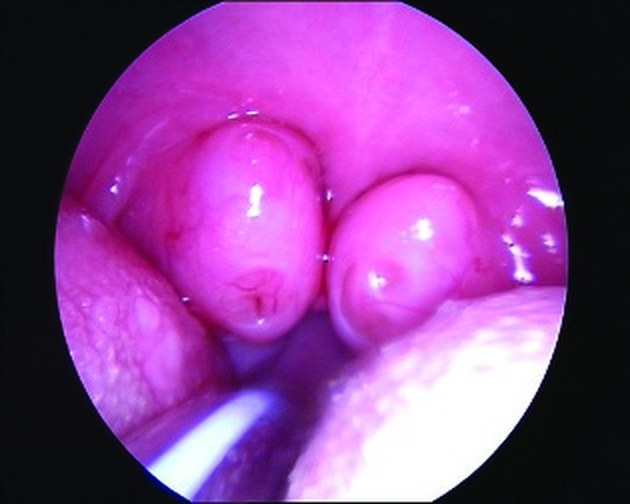
Степени гипертрофии нёбных миндалин в разных книгах
Для нёбных миндалин все книги пользуются ориентирами Б. С. Преображенского: расстояние от края передней нёбной дужки до средней линии зева (язычка) делят на три части. Расходятся книги только в описании III степени: по одним, миндалины доходят до язычка, по другим — соприкасаются друг с другом, а национальное руководство добавляет, что они «иногда заходят друг за друга».
Таблица 3. Степени гипертрофии нёбных миндалин по Б. С. Преображенскому (составлено по текстам главы: Пальчун, Магомедов, Лучихин, учебник, с. 315–316; Пальчун и соавт., с. 255; Пальчун, учебник для колледжей, с. 162; Нац. руководство, 2016, с. 834; Богомильский, Чистякова, с. 264; Заболотный и соавт., с. 346–347; Солдатов, Гофман, гл. 3; Овчинников, Гамов, с. 207)
| Степень | Что занимает миндалина | Где описание III степени расходится |
|---|---|---|
| I | Наружную треть расстояния от передней дужки до средней линии зева | — |
| II | Две трети этого расстояния | — |
| III | Всё расстояние: доходит до язычка или средней линии | Соприкасаются друг с другом (Богомильский, Заболотный, Солдатов); иногда заходят друг за друга (национальное руководство); прикрывают более 2/3 линии (руководство Пальчуна и соавт.) |
Гипертрофия язычной и тубарных миндалин
Гипертрофия язычной миндалины — нередкая аномалия развития, которая часто сопровождается гипертрофией и других солитарных лимфаденоидных образований глотки. Слизистая оболочка верхней поверхности корня языка, в отличие от остальной его части, сосочков не имеет, но содержит большое количество лимфатических фолликулов различной величины (folliculi linguales), которые выступают на поверхности корня языка в форме округлых бугорков и в совокупности составляют язычную миндалину (tonsilla lingualis). В детском возрасте эта миндалина значительно развита и занимает весь корень языка. После 14 лет срединная часть язычной миндалины подвергается обратному развитию, и миндалина как бы делится на две симметричные половины — правую и левую.
![Рис. 16.35. Строение спинки языка: 1 — валлекулы надгортанника; 2 — срединная язычно-надгортанная складка; 3 — корень языка; 4 — нёбная миндалина; 5 — язычная миндалина и ее фолликулы; 6 — пограничная борозда; 7 — грибовидные сосочки; 8 — тело языка; 9 — спинка языка; 10 — медиальная борозда языка; 11 — нитевидные сосочки; 12 — конические сосочки; 13 — желобоватые сосочки; 14 — листовидные сосочки; 15 — лентикулярные сосочки; 16 — слепое отверстие языка; 17 — нёбная миндалина; 18 — боковая язычно-надгортанная складка; 19 — надгортанник](img/tb-bab-16-35.jpg)
Однако в некоторых случаях язычная миндалина не подвергается обратному развитию, а продолжает увеличиваться, занимая всё пространство между корнем языка и задней стенкой гортаноглотки, заполняя также и язычно-надгортанные ямки, вызывая ощущение инородного тела и провоцируя различные, беспокоящие больного рефлекторные ощущения и акты. Обычно гипертрофия язычной миндалины завершается между 20 и 40 годами жизни, чаще встречается у женщин. Причину гипертрофии язычной миндалины следует искать прежде всего во врождённой предрасположенности к этой аномалии развития, которая активизируется благодаря анатомическому положению IV миндалины, лежащей на воздухоносном и пищевом пути, постоянной травматизации её грубой острой пищей.
Патологическая анатомия
Различают две формы гипертрофии язычной миндалины — лимфоидную и сосудисто-железистую. Первая возникает в результате влияния хронического воспалительного процесса в нёбных миндалинах, который распространяется и на язычную миндалину, нередко проявляющийся её воспалением. Гипертрофия лимфоидной ткани язычной миндалины возникает также как компенсаторный процесс после удаления нёбных миндалин. Вторая форма гипертрофии возникает при разрастании венозных сосудистых сплетений и увеличении числа слизистых желёз. Одновременно уменьшается объём лимфаденоидной ткани. Эта форма чаще всего встречается у больных с заболеваниями пищеварительной системы, а также у лиц, по роду профессиональной деятельности которых возникает необходимость в повышении внутригрудного давления (певцы, ораторы, музыканты на духовых инструментах, стеклодувы).
Симптомы и клиническое течение
Больные предъявляют жалобы на ощущение инородного тела в глотке, затруднение при глотании, изменение тембра голоса, храп в ночное время, периодические апноэ. При физической нагрузке дыхание у таких лиц становится шумным, клокочущим. Особенно беспокоит больных хронический «беспричинный» кашель — сухой, звонкий, без мокроты, иногда приводящий к ларингоспазму и стридорозному дыханию. Этот кашель не поддаётся никакому лечению и продолжает беспокоить больного в течение многих лет. Кашель обусловлен тем, что гипертрофированная язычная миндалина давит на надгортанник и раздражает иннервирующие его нервные окончания верхнего гортанного нерва, который опосредованно через блуждающий нерв посылает импульсы к бульбарному кашлевому центру.
Лечение гипертрофии язычной миндалины должно преследовать цель уменьшения ее объема, которая достигается различными средствами. Применение в прежние времена различных «каустических» средств существенных результатов не принесло. Хирургическое иссечение язычной миндалины чревато грозными кровотечениями, нередко заканчивающимися перевязкой одной или обеих наруж ных сонных артерий с известными последствиями. В настоящее время методами выбора могут быть диатермокоагуляция (4–6 сеансов) и криохирургическое воз действие (2–3 сеанса). При рецидиве гипертрофии, особенно сосудистого типа, применяют лучевую терапию, обеспечивающую окончательное выздоровление.
Гипертрофия миндалины Герлаха
В перепончато-хрящевой части слуховых труб располагаются скопления лимфоидной ткани, впервые описанные немецким учёным Герлахом и получившие за рубежом название миндалины Герлаха. Эта ткань более развита в области перешейка слуховых труб и особенно много её в области раструба носоглоточного отверстия, где она образует трубную миндалину. Эти лимфаденоидные образования тесно связаны морфогенетически и функционально с лимфаденоидным кольцом Пирогова — Вальдейера. Указанная лимфаденоидная ткань особенно развита (гипертрофирована) у детей, у взрослых она подвергается обратному развитию. В редких случаях при задней риноскопии обнаруживаются скопления почковидных продолговатых образований, покрывающих в виде бахромы носоглоточное отверстие слуховых труб. Эти образования, находясь в области хрящевого раструба слуховых труб, вызывают нарушение её вентиляционной и эвакуаторной функции, что неизменно сказывается на остроте слуха.
Воспаление глоточной миндалины, как правило, распространяется и на тубарные миндалины, вызывая их гипертрофию и соответствующие нарушения со стороны функции слуха. Распространение гипертрофического процесса лимфоидной ткани вдоль слизистой оболочки перепончато-хрящевого отдела слуховых труб, особенно в области isthmus, вызывает упорную тугоухость кондуктивного характера, с трудом поддающуюся лечению вследствие непроходимости слуховых труб. Лечение предусматривает в первую очередь медикаментозную санацию носоглотки и при наличии показаний — удаление аденоидов и кюретаж трубных миндалин. При отсутствии положительного результата назначают лучевое лечение, которое в подавляющем большинстве случаев даёт положительный результат. по: Бабияк и соавт., т. 1, с. 639–641
Гипертрофия язычной миндалины наблюдается у взрослых. Причины ее возникновения такие же, как и гипертрофии глоточной миндалины. Очень часто гипертрофия этой миндалины встречается у лиц с удаленными нёбными миндалинами. Больные жалуются на ощущение инородного тела в горле, дискомфорт при глотании. У некоторых из них появляется кашель (иногда в виде приступа), ларингоспазм. При непрямой гипофарингоскопии заметна резкая гиперплазия язычной миндалины, которая касается язычной поверхности надгортанника; иногда гипертрофированную язычную миндалину можно увидеть во время обычной фарингоскопии. При развитии хронического воспалительного процесса в язычной миндалине, кроме вышеперечисленных симптомов, появляются признаки интоксикации: общая слабость, быстрая утомляемость, повышенная потливость, возможен субфебрилитет. Эти больные часто болеют язычной ангиной. Непрямая гипофарингоскопия дает возможность увидеть увеличенную миндалину, отекшую, гиперемированную слизистую оболочку со сглаженными характерными выступами миндалин. Больным с хроническим воспалением язычной миндалины необходимо назначить неспецифическую гипосенсибилизирующую и стимулирующую терапию. Местно назначают полоскание глотки щелочными и дезинфицирующими растворами. При гипертрофии язычной миндалины такое лечение неэффективно. Эта патология требует применения хирургических методов лечения: проводят скусывание гипертрофированной миндалины, воздействие хирургическим лазером и криовоздействие с помощью специального наконечника. по: Заболотный и соавт., с. 351–352
Источники
- Бабияк В. И., Накатис Я. А., Говорун М. И. Оториноларингология. Руководство. Т. 1. — СПб.: Питер, 2009. — Гл. 16 «Болезни глотки»: с. 477–478 (острый аденоидит), с. 579–595 (аденоидные разращения), с. 637–641 (гипертрофия лимфаденоидных образований глотки).
- Оториноларингология: национальное руководство / под ред. В. Т. Пальчуна. — 2-е изд., перераб. и доп. — М.: ГЭОТАР-Медиа, 2016. — Гл. 12 «Болезни глотки», разделы «Аденоиды», «Аденоидит», «Гипертрофия нёбных миндалин» (Чистякова В. Р.): с. 823–837.
- Пальчун В. Т., Лучихин Л. А., Магомедов М. М. Руководство по практической оториноларингологии. — М.: Медицинское информационное агентство, 2010 (гл. 3 «Операции на ЛОР-органах», с. 250–255, 263–265; гл. 4 «Консервативное лечение наиболее частых заболеваний ЛОР-органов», с. 300–308).
- Пальчун В. Т., Магомедов М. М., Лучихин Л. А. Оториноларингология: учебник. — Гл. 3 «Заболевания глотки»: раздел 3.4.3 «Ангина глоточной миндалины (аденоидит)», с. 279–280; разделы 3.7 «Гипертрофия нёбных миндалин» и 3.8 «Гипертрофия носоглоточной миндалины (аденоиды)», с. 315–323 (по нумерации электронного издания; рис. 3.23, 3.24).
- Watkinson J. C., Clarke R. W. (eds.) Scott-Brown's Otorhinolaryngology, Head and Neck Surgery, 8th ed. — Boca Raton: CRC Press, 2018 (т. 2, гл. 26 «The adenoid and adenoidectomy», с. 288–289, гл. 38 «Diseases of tonsils, tonsillectomy and tonsillotomy», с. 436; т. 3, гл. 51 «Pharyngitis», с. 791–799, 802).
- Солдатов И. Б., Гофман В. Р. (ред.) Оториноларингология: учебник. — СПб.: ЭЛБИ, 2000. — Гл. 3, раздел 3.5 «Хронические заболевания глотки» (гипертрофия миндалин, аденоиды).
- Богомильский М. Р., Чистякова В. Р. Детская оториноларингология. — М.: ГЭОТАР-МЕД, 2002. — Гл. 4 «Гипертрофия лимфоидного глоточного кольца»: с. 264–268.
- Заболотный Д. И., Митин Ю. В., Безшапочный С. Б., Деева Ю. В. Оториноларингология: учебник. — Киев: ВСИ «Медицина», 2010. — «Гипертрофия небных миндалин», «Гипертрофия и хроническое воспаление глоточной миндалины», «… язычной миндалины»: с. 346–352.
- Behrbohm H., Kaschke O., Nawka T., Swift A. Ear, Nose, and Throat Diseases with Head and Neck Surgery. — Stuttgart: Thieme. — Разд. 3.3.1 «Hyperplasia of the Lymphoepithelial Organs» (аденоиды, рис. 3.18), 3.3.3.3 «Peritonsillar Abscess (Quinsy)», рис. 3.43.
- Овчинников Ю. М., Гамов В. П. Болезни носа, глотки, гортани и уха: учебник. — 2-е изд., перераб. и доп. — М.: Медицина, 2003. — Разделы 7.2.4 «Аденоиды», 7.2.5 «Гипертрофия небных миндалин»: с. 204–207.
- Пальчун В. Т., Лучихин Л. А., Крюков А. И. Болезни уха, горла и носа: учебник для медицинских колледжей. — 2-е изд. — М.: ГЭОТАР-Медиа, 2010. — Гл. 7 «Заболевания глотки»: с. 145, 162–163.
Раздел «Учебник» — справочная теория, не клинические рекомендации. Тактика ведения пациента — по разборам КР.